| Méthode factorielle | Abr. | Type de données | Type de distance |
|---|---|---|---|
| Analyse en composantes principales | ACP | Variables continues | Distance euclidienne |
| Analyse factorielle des correspondances | AFC | Tableau de contingence | Distance du khi-deux |
| Analyse factorielle des correspondances multiples | ACM | Variables qualitatives | Distance du khi-deux |
12 Méthodes factorielles
Dans le cadre de ce chapitre, nous présentons les trois méthodes factorielles les plus utilisées en sciences sociales : l’analyse en composantes principales (ACP, section sec-122), l’analyse factorielle des correspondances (AFC, section sec-123) et l’analyse factorielle des correspondances multiples (ACM, section sec-124). Ces méthodes, qui permettent d’explorer et de synthétiser l’information de différents tableaux de données, relèvent de la statistique exploratoire multidimensionnelle.
Liste des packages utilisés dans ce chapitre
- Pour créer des graphiques :
-
ggplot2, le seul, l’unique! -
ggpubrpour combiner des graphiques.
-
- Pour les analyses factorielles :
-
FactoMineRpour réaliser une ACP, une AFC et une ACM. -
factoextrapour réaliser des graphiques à partir des résultats d’une analyse factorielle. -
explorpour les résultats d’une ACP, d’une AFC ou d’une ACM avec une interface Web interactive.
-
- Autres packages :
-
geocmeanspour un jeu de données utilisé pour calculer une ACP. -
ggplot2,ggpubr,stringretcorrplotpour réaliser des graphiques personnalisés sur les résultats d’une analyse factorielle. -
tmapetRColorBrewerpour cartographier les coordonnées factorielles. -
Hmiscpour l’obtention d’une matrice de corrélation.
-
Réduction de données et identification de variables latentes
Les méthodes factorielles sont souvent dénommées des méthodes de réduction de données, en raison de leur objectif principal : résumer l’information d’un tableau en quelques nouvelles variables synthétiques (figure fig-AnalysesFactoriellesFig). Ainsi, elles permettent de réduire l’information d’un tableau volumineux — comprenant par exemple 1000 observations et 100 variables — en p nouvelles variables (par exemple cinq avec toujours 1000 observations) résumant X % de l’information contenue dans le tableau initial. Lebart et al. (1995, 13) proposent une formulation plus mathématique : ils signalent qu’avec les méthodes factorielles, « on cherche à réduire les dimensions du tableau de données en représentant les associations entre individus et entre variables dans des espaces de faibles dimensions ».
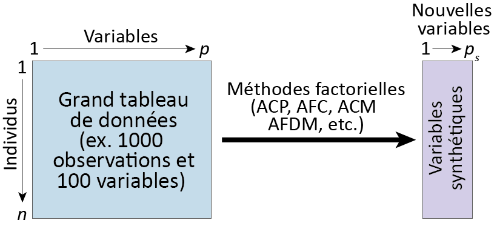
Ces nouvelles variables synthétiques peuvent être considérées comme des variables latentes puisqu’elles ne sont pas directement observées; elles sont plutôt produites par la méthode factorielle utilisée afin de résumer les relations/associations entre plusieurs variables mesurées initialement.
12.1 Aperçu des méthodes factorielles
12.1.1 Méthodes factorielles et types de données
En analyse factorielle, la nature même des données du tableau à traiter détermine la méthode à employer : l’analyse en composantes principales (ACP) est adaptée aux tableaux avec des variables continues (idéalement normalement distribuées), l’analyse factorielle des correspondances (AFC) s’applique à des tableaux de contingence tandis que l’analyse des correspondances multiples (ACM) permet de résumer des tableaux avec des données qualitatives (issues d’un sondage par exemple) (tableau tbl-typesanalysesfactorielles). Sachez toutefois qu’il existe d’autres méthodes factorielles qui ne sont pas abordées dans ce chapitre, notamment : l’analyse factorielle de données mixtes (AFDM) permettant d’explorer des tableaux avec à la fois des variables continues et des variables qualitatives et l’analyse factorielle multiple hiérarchique (AFMH) permettant de traiter des tableaux avec une structure hiérarchique. Pour s’initier à ces deux autres méthodes factorielles plus récentes, consultez notamment l’excellent ouvrage de Jérôme Pagès (2013).
12.1.2 Bref historique des méthodes factorielles
Il existe une longue tradition de l’utilisation des méthodes factorielles dans le monde universitaire francophone puisque plusieurs d’entre elles ont été proposées par des statisticiens et des statisticiennes francophones à partir des années 1960. L’analyse en composantes principales (ACP) a été proposée dès les années 1930 par le statisticien américain Harold Hotelling (1933). En revanche, l’analyse des correspondances (AFC) et son extension, l’analyse des correspondances multiples (ACM), ont été proposées par le statisticien français Jean-Paul Benzécri (1973), tandis que l’analyse factorielle de données mixtes (AFDM) a été proposée par Brigitte Escofier et Jérôme Pagès (Escofier 1979; Pagès 2002).
Ainsi, plusieurs ouvrages de statistique sur les méthodes factorielles, désormais classiques, ont été publiés en français (Benzécri 1973; Escofier et Pagès 1998; Lebart, Morineau et Piron 1995; Pagès 2013). Ils méritent grandement d’être consultés, notamment pour mieux comprendre les formulations mathématiques (matricielles et géométriques) de ces méthodes. À cela s’ajoutent plusieurs ouvrages visant à « vulgariser ces méthodes » en sciences sociales; c’est notamment le cas de l’excellent ouvrage de Léna Sanders (1989) en géographie.
12.2 Analyses en composantes principales (ACP)
D’emblée, notez qu’il existe deux types d’analyse en composantes principales (ACP) (Principal Component Analysis, PCA en anglais) :
l’ACP non normée dans laquelle les variables quantitatives du tableau sont uniquement centrées (moyenne = 0).
l’ACP normée dans laquelle les variables quantitatives du tableau sont préalablement centrées réduites (moyenne = 0 et variance = 1; section sec-02552).
Puisque les variables d’un tableau sont souvent exprimées dans des unités de mesure différentes ou avec des ordres de grandeur différents (intervalles et écarts-types bien différents), l’utilisation de l’ACP normée est bien plus courante. Elle est d’ailleurs l’option par défaut dans les fonctions R permettant de calculer une ACP. Par conséquent, nous détaillons dans cette section uniquement l’ACP normée.
Autrement dit, le recours à une ACP non normée est plus rare et s’applique uniquement à la situation suivante : toutes les variables du tableau sont mesurées dans la même unité (par exemple, en pourcentage); il pourrait être ainsi judicieux de conserver leurs variances respectives.
12.2.1 Recherche d’une simplification
L’ACP permet d’explorer et de résumer un tableau constitué uniquement de variables quantitatives (figure fig-AnalysesFactoriellesTabACPFig), et ce, de trois façons : 1) en montrant les ressemblances entre les individus (observations), 2) en révélant les liaisons entre les variables quantitatives et 3) en résumant l’ensemble des variables du tableau par des variables synthétiques nommées composantes principales.
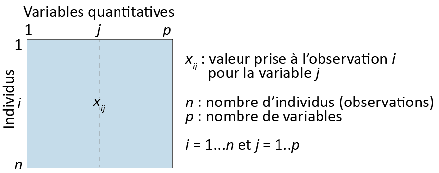
Ressemblance entre les individus. Concrètement, deux individus se ressemblent si leurs valeurs respectives pour les p variables du tableau sont similaires. Cette proximité/ressemblance est évaluée à partir de la distance euclidienne (équation eq-ACPdistEuc). La notion de distance fait l’objet d’une section à part entière (section sec-1321) que vous pouvez consulter dès à présent si elle ne vous est pas familière.
\[ d^2(a,b) = \sum_{j=1}^p(x_{aj}-x_{bj})^2 \tag{12.1}\]
Prenons un exemple fictif avec trois individus (i, j et k) ayant des valeurs pour trois variables préalablement centrées réduites (V1 à V3) (tableau tbl-distanceACPindi). La proximité entre les paires de points est évaluée comme suit :
\[d^2(i,j)=(-\mbox{1,15}-\mbox{0,49})^2+(-\mbox{1,15}-\mbox{0,58})^2+(\mbox{0,83}+\mbox{1,11})^2=\mbox{9,44}\] \[d^2(i,k)=(-\mbox{1,15}+\mbox{0,66})^2+(-\mbox{1,15}-\mbox{0,58})^2+(\mbox{0,83}-\mbox{0,28})^2=\mbox{5,98}\]
\[d^2(j,k)= (\mbox{0,49}+\mbox{0,66})^2+(\mbox{0,58}-\mbox{0,58})^2+(-\mbox{1,11}-\mbox{0,28})^2=\mbox{1,97}\]
Nous pouvons en conclure que i est plus proche de k que de j, mais aussi que la paire de points les plus proches est (i,k). En d’autres termes, les deux observations i et k sont les plus similaires du jeu de données selon la distance euclidienne.
| Individu | V1 | V2 | V3 |
|---|---|---|---|
| i | -1,15 | -1,15 | 0,83 |
| j | 0,49 | 0,58 | -1,11 |
| k | 0,66 | 0,58 | 0,28 |
Liaisons entre les variables. Dans une ACP normée, les liaisons entre les variables deux à deux sont évaluées avec le coefficient de corrélation (section sec-0431), soit la moyenne du produit des deux variables centrées réduites (équation eq-ACPcor). Notez que dans une ACP non normée, plus rarement utilisée, les liaisons sont évaluées avec la covariance puisque les variables sont uniquement centrées (équation eq-ACPcov).
\[ r_{xy} = \frac{\sum_{i=1}^n (x_{i}-\bar{x})(y_{i}-\bar{y})}{n\sqrt{\sum_{i=1}^n(x_i - \bar{x})^2(y_i - \bar{y})^2}}=\sum_{i=1}^n\frac{Zx_iZy_i}{n} \tag{12.2}\]
\[ cov(x,y) = \frac{\sum_{i=1}^n (x_{i}-\bar{x})(y_{i}-\bar{y})}{n} \tag{12.3}\]
Composantes principales. Au chapitre sec-chap04, nous avons abordé deux méthodes pour identifier des relations linéaires entre des variables continues normalement distribuées :
la corrélation de Pearson (section sec-043), qu’il est possible d’illustrer graphiquement à partir d’un nuage de points;
la régression linéaire simple (section sec-044), permettant de résumer la relation linéaire entre deux variables avec une droite de régression de type \(Y=a+bX\).
Brièvement, plus deux variables sont corrélées (positivement ou négativement), plus le nuage de points qu’elles forment est allongé et plus les points sont proches de la droite de régression (figure fig-liaisons2Vars, partie a). À l’inverse, plus la liaison entre les deux variables normalement distribuées est faible, plus le nuage prend la forme d’un cercle et plus les points du nuage sont éloignés de la droite de régression (figure fig-liaisons2Vars, partie b). Puisqu’en ACP normée, les variables sont centrées réduites, le centre de gravité du nuage de points est (x = 0, y = 0) et il est toujours traversé par la droite de régression. Finalement, nous avons vu que la méthode des moindres carrés ordinaires (MCO) permet de déterminer cette droite en minimisant les distances entre les valeurs observées et celles projetées orthogonalement sur cette droite (valeurs prédites). Dans le cas de deux variables uniquement, l’axe factoriel principal/la composante principale est donc la droite qui résume le mieux la liaison entre les deux variables (en rouge). L’axe 2 représente la seconde plus importante composante (axe, dimension) et il est orthogonal (perpendiculaire) au premier axe (en bleu).
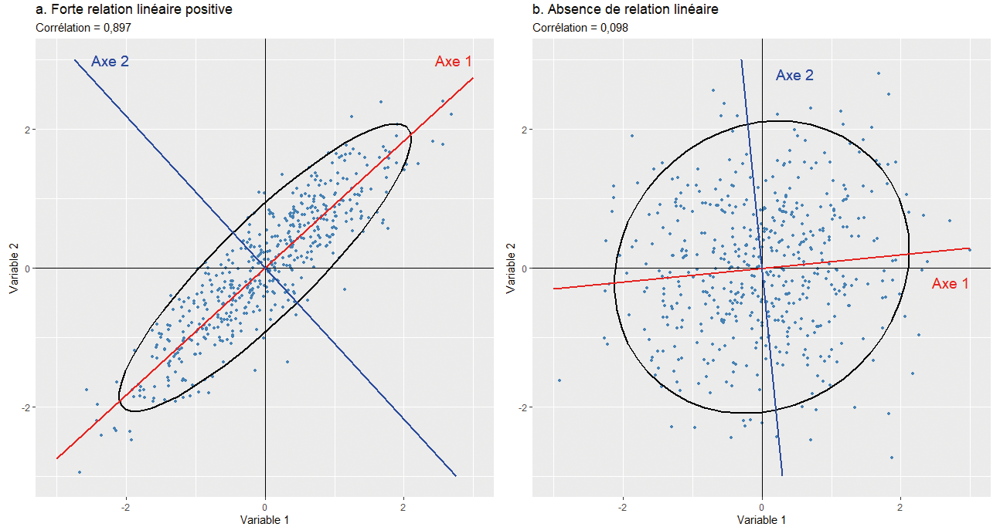
Imaginez maintenant trois variables pour lesquelles vous désirez identifier un axe, une droite qui résume le mieux les liaisons entre elles. Visuellement, vous passez d’un nuage de points en deux dimensions (2D) à un nuage en dimensions (3D). Si les corrélations entre les trois variables sont très faibles, alors le nuage prend la forme d’un ballon de soccer (football en Europe). Par contre, plus ces liaisons sont fortes, plus la forme est allongée comme un ballon de rugby et plus les points sont proches de l’axe traversant le ballon.
Ajouter une autre variable revient alors à ajouter une quatrième dimension qu’il est impossible de visualiser, même pour les plus fervents adaptes de science-fiction. Pourtant, le problème reste le même : identifier, dans un plan en p dimensions (variables), les axes factoriels – les composantes principales – qui concourent le plus à résumer les liaisons entre les variables continues préalablement centrées réduites, et ce, en utilisant la méthode des moindres carrés ordinaires.
Composantes principales et axes factoriels
Les termes composantes principales et axes factoriels sont des synonymes employés pour référer aux nouvelles variables synthétiques produites par l’ACP et résumant l’information du tableau initial.
12.2.2 Aides à l’interprétation
Pour illustrer les aides à l’interprétation de l’ACP, nous utilisons un jeu de données spatiales tiré d’un article sur l’agglomération lyonnaise en France (Gelb et Apparicio 2021). Ce jeu de données comprend dix variables, dont quatre environnementales (EN) et six socioéconomiques (SE), pour les îlots regroupés pour l’information statistique (IRIS) de l’agglomération lyonnaise (tableau tbl-dataacp et figure fig-datacartoacp). Sur ces dix variables, nous calculons une ACP normée.
| Nom | Intitulé | Type | Moy. | E.-T. | Min. | Max. | |
|---|---|---|---|---|---|---|---|
| Lden | Lden | Bruit routier (Lden dB(A)) | EN | 55,6 | 4,9 | 33,9 | 71,7 |
| NO2 | NO2 | Dioxyde d’azote (ug/m3) | EN | 28,7 | 7,9 | 12,0 | 60,2 |
| PM25 | PM25 | Particules fines (PM\(_{2,5}\)) | EN | 16,8 | 2,1 | 11,3 | 21,9 |
| VegHautPrt | VegHautPrt | Canopée (%) | EN | 18,7 | 10,1 | 1,7 | 53,8 |
| Pct0_14 | Pct0_14 | Moins de 15 ans (%) | SE | 18,5 | 5,7 | 0,0 | 54,0 |
| Pct_65 | Pct_65 | 65 ans et plus (%) | SE | 16,2 | 5,9 | 0,0 | 45,1 |
| Pct_Img | Pct_Img | Immigrants (%) | SE | 14,5 | 9,1 | 0,0 | 59,8 |
| TxChom1564 | TxChom1564 | Taux de chômage | SE | 14,8 | 8,1 | 0,0 | 98,8 |
| Pct_brevet | Pct_brevet | Personnes à faible scolarité (%) | SE | 23,5 | 12,6 | 0,0 | 100,0 |
| NivVieMed | NivVieMed | Médiane du niveau de vie (Euros) | SE | 21 804,5 | 4 922,5 | 11 324,0 | 38 707,0 |
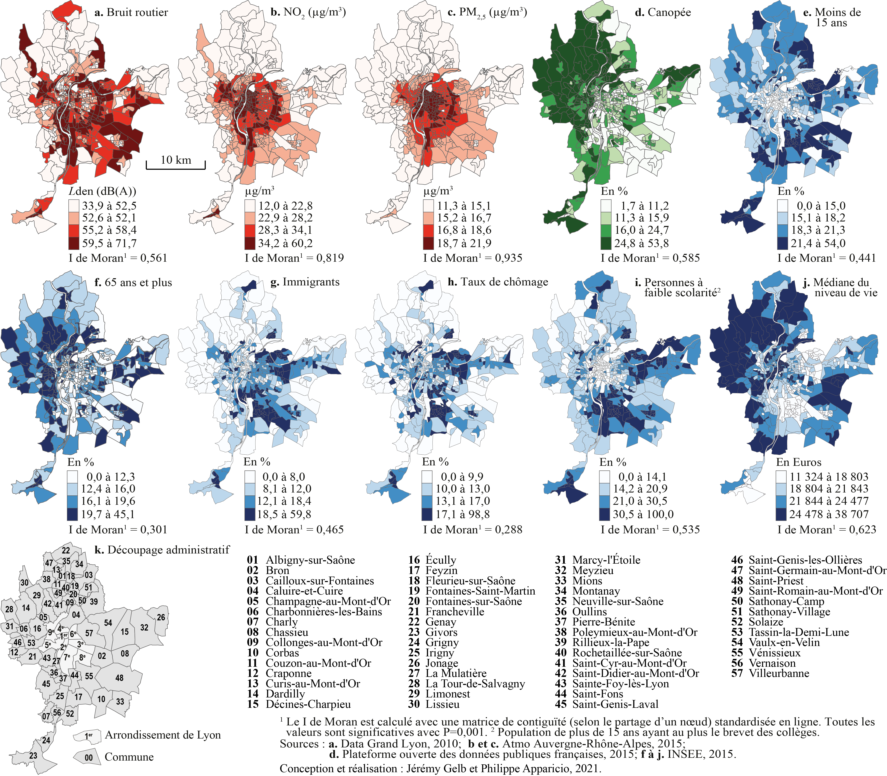
Trois étapes pour bien analyser une ACP et comprendre la signification des axes factoriels
Interprétation des résultats des valeurs propres pour identifier le nombre d’axes (de composantes principales) à retenir. L’enjeu est de garder un nombre d’axes limité qui résume le mieux le tableau initial (réduction des données).
Analyse des résultats pour les variables (coordonnées factorielles, cosinus carrés et contributions sur les axes retenus).
Analyse des résultats pour les individus (coordonnées factorielles, cosinus carrés et contributions sur les axes retenus).
Les deux dernières étapes permettent de comprendre la signification des axes retenus et de les qualifier. Cette étape d’interprétation est essentielle en sciences sociales. En effet, nous avons vu dans l’introduction du chapitre que les méthodes factorielles permettent de résumer l’information d’un tableau en quelques nouvelles variables synthétiques, souvent considérées comme des variables latentes dans le jeu de données. Il convient alors de bien comprendre ces variables synthétiques (latentes), si nous souhaitons les utiliser dans une autre analyse subséquente (par exemple, les introduire dans une régression).
12.2.2.1 Résultats de l’ACP pour les valeurs propres
À titre de rappel, une ACP normée est réalisée sur des variables préalablement centrées réduites (équation eq-scorezacpnormee), ce qui signifie que pour chaque variable :
- Nous soustrayons à chaque valeur la moyenne de la variable correspondante (centrage); la moyenne est donc égale à 0.
- Nous divisons cette différence par l’écart-type de la variable correspondante (réduction); la variance est égale à 1.
\[ z= \frac{x_i-\mu}{\sigma} \tag{12.4}\]
Par conséquent, la variance totale (ou inertie totale) d’un tableau sur lequel est calculée une ACP normée est égale au nombre de variables qu’il comprend. Puisque nous l’appliquons ici à dix variables, la variance totale du tableau à réduire – c’est-à-dire à résumer en K nouvelles variables synthétiques, composantes principales, axes factoriels – est donc égale à 10. Trois mesures reportées au tableau tbl-dataacpValeurPropres permettent d’analyser les valeurs propres :
\(\mbox{VP}_k\), la valeur propre (eigenvalue en anglais) de l’axe k, c’est-à-dire la quantité de variance du tableau initial résumé par l’axe.
\(\mbox{VP}_k / \mbox{P}\) avec P étant le nombre de variables que comprend le tableau initial. Cette mesure représente ainsi le pourcentage de la variance totale du tableau résumé par l’axe k; autrement dit, la quantité d’informations du tableau initial résumée par l’axe, la composante principale k. Cela nous permet ainsi d’évaluer le pouvoir explicatif de l’axe.
Le pourcentage cumulé pour les axes.
| Composante | Valeur propre | Pourcentage | Pourc. cumulé | |
|---|---|---|---|---|
| comp 1 | 1 | 3,543 | 35,425 | 35,425 |
| comp 2 | 2 | 2,760 | 27,596 | 63,021 |
| comp 3 | 3 | 1,042 | 10,422 | 73,443 |
| comp 4 | 4 | 0,751 | 7,511 | 80,954 |
| comp 5 | 5 | 0,606 | 6,059 | 87,013 |
| comp 6 | 6 | 0,388 | 3,880 | 90,893 |
| comp 7 | 7 | 0,379 | 3,788 | 94,681 |
| comp 8 | 8 | 0,244 | 2,441 | 97,122 |
| comp 9 | 9 | 0,217 | 2,167 | 99,289 |
| comp 10 | 10 | 0,071 | 0,711 | 100,000 |
Avant d’analyser en détail le tableau tbl-dataacpValeurPropres, notez que la somme des valeurs propres de toutes les composantes de l’ACP est toujours égale au nombre de variables du tableau initial. Aussi, la quantité de variance expliquée (les valeurs propres) décroît de la composante 1 à la composante K.
Combien d’axes d’une ACP faut-il retenir? Pour répondre à cette question, deux approches sont possibles :
Approche statistique (avec le critère de Kaiser (1960)). Nous retenons uniquement les composantes qui présentent une valeur propre supérieure à 1. Rappelez-vous qu’en ACP normée, les variables sont préalablement centrées réduites, et donc que leur variance respective est égale à 1. Par conséquent, une composante ayant une valeur propre inférieure à 1 a un pouvoir explicatif inférieur à celui d’une variable. À la lecture du tableau, nous retenons les trois premières composantes si nous appliquons ce critère.
Approche empirique basée sur la lecture des pourcentages et des pourcentages cumulés. Nous pouvons retenir uniquement les deux premières composantes. En effet, ces deux premiers facteurs résument près des deux tiers de la variance totale du tableau (63,02 %). Cela démontre bien que l’ACP, comme les autres méthodes factorielles, est bien une méthode de réduction de données puisque nous résumons dix variables avec deux nouvelles variables synthétiques (axes, composantes principales). Pour faciliter le choix du nombre d’axes, il est fortement conseillé de construire des histogrammes à partir des valeurs propres, des pourcentages et des pourcentages cumulés (figure fig-acpgraphvp). Or, à la lecture de ces graphiques, nous constatons que la variance expliquée chute drastiquement après les deux premières composantes. Par conséquent, nous pouvons retenir uniquement les deux premiers axes.
Lecture du diagramme des valeurs propres
Plus les variables incluses dans l’ACP sont corrélées entre elles, plus l’ACP est intéressante : plus les valeurs propres des premiers axes sont fortes et plus il y a des sauts importants dans le diagramme des valeurs propres. À l’inverse, lorsque les variables incluses dans l’ACP sont peu corrélées entre elles, il n’y a pas de sauts importants dans l’histogramme, autrement dit les valeurs propres sont uniformément décroissantes.
12.2.2.2 Résultats de l’ACP pour les variables
Pour qualifier les axes, quatre mesures sont disponibles pour les variables :
Les coordonnées factorielles des variables sont simplement les coefficients de corrélation de Pearson des variables sur l’axe k et varient ainsi de -1 à 1 (relire au besoin la section sec-043). Pour qualifier un axe, il convient alors de repérer les variables les plus corrélées positivement et négativement sur l’axe, autrement dit, de repérer les variables situées aux extrémités l’axe.
Les cosinus carrés des variables (Cos2) (appelés aussi les qualités de représentation des variables sur un axe) permettent de repérer le ou les axes qui concourent le plus à donner un sens à la variable. Ils sont en fait les coordonnées des variables mises au carré. La somme des cosinus carrés d’une variable sur tous les axes de l’ACP est donc égale à 1 (sommation en ligne).
La qualité de représentation d’une variable sur les n premiers axes est simplement la somme des cosinus carrés d’une variable sur les axes retenus. Par exemple, pour la variable
Lden, la qualité de représentation de la variable sur le premier axe est égale : \(\mbox{0,42}^2=\mbox{0,17}\). Pour cette même variable, la qualité de laLdensur les trois premiers axes est égale à : \(\mbox{0,17}+\mbox{0,32}+\mbox{0,26}=\mbox{0,75}\).Les contributions des variables permettent de repérer celles qui participent le plus à la formation d’un axe. Elles s’obtiennent en divisant les cosinus carrés par la valeur propre de l’axe multiplié par 100. La somme des contributions des variables pour un axe donné est donc égale à 100 (sommation en colonne). Par exemple, pour la variable
Lden, la contribution sur le premier axe est égale : \(\mbox{0,174} / \mbox{3,543} \times \mbox{100}= \mbox{4,920 }%\).
Les résultats de l’ACP pour les variables sont présentés au tableau tbl-dataacpCoordVars.
| Variable | 1 | 2 | 3 | 1 | 2 | 3 | Qualité | 1 | 2 | 3 |
|---|---|---|---|---|---|---|---|---|---|---|
| Lden | 0,42 | 0,57 | 0,51 | 0,17 | 0,32 | 0,26 | 0,75 | 4,92 | 11,64 | 24,80 |
| NO2 | 0,15 | 0,93 | 0,19 | 0,02 | 0,86 | 0,04 | 0,92 | 0,66 | 31,07 | 3,54 |
| PM25 | 0,19 | 0,92 | 0,03 | 0,04 | 0,84 | 0,00 | 0,87 | 1,01 | 30,36 | 0,12 |
| VegHautPrt | -0,40 | -0,42 | 0,40 | 0,16 | 0,18 | 0,16 | 0,50 | 4,63 | 6,35 | 15,46 |
| Pct0_14 | 0,55 | -0,53 | 0,08 | 0,30 | 0,28 | 0,01 | 0,59 | 8,61 | 10,28 | 0,55 |
| Pct_65 | -0,41 | -0,27 | 0,72 | 0,17 | 0,07 | 0,51 | 0,75 | 4,73 | 2,66 | 49,26 |
| Pct_Img | 0,87 | -0,09 | 0,11 | 0,76 | 0,01 | 0,01 | 0,78 | 21,56 | 0,29 | 1,08 |
| TxChom1564 | 0,77 | -0,09 | -0,07 | 0,60 | 0,01 | 0,00 | 0,61 | 16,89 | 0,27 | 0,45 |
| Pct_brevet | 0,73 | -0,43 | 0,22 | 0,53 | 0,19 | 0,05 | 0,77 | 14,94 | 6,81 | 4,61 |
| NivVieMed | -0,88 | 0,09 | 0,04 | 0,78 | 0,01 | 0,00 | 0,79 | 22,06 | 0,28 | 0,14 |
Analyse de la première composante principale (valeur propre de 3,54, 35,43 %)
À la lecture des contributions, il est clair que quatre variables contribuent grandement à la formation de l’axe 1 :
NivVieMed(22,06 %),Pct_Img(21,56 %),TxChom1564(16,89 %) etPct_brevet(14,94 %). Il convient alors d’analyser en détail leurs coordonnées factorielles et leurs cosinus carrés.À la lecture des coordonnées factorielles, nous constatons que trois variables socioéconomiques sont fortement corrélées positivement avec l’axe 1, soit le pourcentage d’immigrants (0,87), le taux de chômage (0,77) et le pourcentage de personnes avec une faible scolarité (0,73). À l’autre extrémité, la médiane du niveau de vie (en euros) est négativement corrélée avec l’axe 1. Comment interpréter ce résultat? Premièrement, cela signifie que plus la valeur de l’axe 1 est positive et élevée, plus celles des trois variables (
Pct_Img,TxChom1564etPct_brevet) sont aussi élevées (corrélations positives) et plus la valeur deNivVieMedest faible (corrélation négative). Inversement, plus la valeur de l’axe 1 est négative et faible, les valeurs dePct_Img,TxChom1564etPct_brevetsont faibles et plus celle deNivVieMedest forte. Deuxièmement, cela signifie que les trois variables (Pct_Img,TxChom1564etPct_brevet) sont fortement corrélées positivement entre elles puisqu’elles se situent sur la même extrémité de l’axe et qu’elles sont toutes trois négativement corrélées avec la variableNivVieMed. Cela peut être rapidement confirmé avec la matrice de corrélation entre les dix variables (tableau tbl-dataacpMatriceCorr).À la lecture des cosinus carrés de l’axe 1, nous constatons que plus des trois quarts de la dispersion/de l’information des variables
NivVieMed(0,78) etPct_Img(0,76) est concentrée sur l’axe 1.
| Variable | A | B | C | D | E | F | G | H | I | J | |
|---|---|---|---|---|---|---|---|---|---|---|---|
| Lden | A. Lden | 0,62 | 0,49 | -0,23 | 0,04 | -0,09 | 0,28 | 0,19 | 0,14 | -0,26 | |
| NO2 | B. NO2 | 0,62 | 0,90 | -0,28 | -0,34 | -0,21 | 0,07 | 0,04 | -0,25 | -0,04 | |
| PM25 | C. PM25 | 0,49 | 0,90 | -0,39 | -0,34 | -0,26 | 0,12 | 0,07 | -0,25 | -0,10 | |
| VegHautPrt | D. VegHautPrt | -0,23 | -0,28 | -0,39 | 0,04 | 0,32 | -0,22 | -0,18 | -0,14 | 0,32 | |
| Pct0_14 | E. Pct0_14 | 0,04 | -0,34 | -0,34 | 0,04 | -0,12 | 0,46 | 0,36 | 0,54 | -0,45 | |
| Pct_65 | F. Pct_65 | -0,09 | -0,21 | -0,26 | 0,32 | -0,12 | -0,24 | -0,30 | 0,00 | 0,32 | |
| Pct_Img | G. Pct_Img | 0,28 | 0,07 | 0,12 | -0,22 | 0,46 | -0,24 | 0,66 | 0,64 | -0,73 | |
| TxChom1564 | H. TxChom1564 | 0,19 | 0,04 | 0,07 | -0,18 | 0,36 | -0,30 | 0,66 | 0,47 | -0,62 | |
| Pct_brevet | I. Pct_brevet | 0,14 | -0,25 | -0,25 | -0,14 | 0,54 | 0,00 | 0,64 | 0,47 | -0,67 | |
| NivVieMed | J. NivVieMed | -0,26 | -0,04 | -0,10 | 0,32 | -0,45 | 0,32 | -0,73 | -0,62 | -0,67 |
Analyse de la deuxième composante principale (valeur propre de 2,76, 27,60 %)
À la lecture des contributions, trois variables environnementales contribuent à la formation de l’axe 2 : principalement, celles sur la pollution de l’air (
NO2= 31,07 % etPM25= 30,36 %) et secondairement, celle sur le bruit routier (Lden= 11,64 %).À la lecture des coordonnées factorielles, ces trois variables sont fortement corrélées positivement avec l’axe 2 :
NO2(0,93),PM25(0,92) etLden(0,57). À l’autre extrémité de l’axe, la variablePct0_14est négativement, mais pas fortement, corrélée (-0,53). La lecture de la matrice de corrélation au tableau tbl-dataacpMatriceCorr confirme que ces trois variables environnementales sont fortement corrélées positivement entre elles (par exemple, un coefficient de corrélation de Pearson de 0,90 entreNO2etPM25).À la lecture des cosinus carrés de l’axe 2, nous constatons que près de 90 % de la dispersion/de l’information des variables
NO2(0,86) etPM25(0,84) est concentrée sur l’axe 2.
Analyse de la troisième composante principale (valeur propre de 1,042, 10,42 %)
- Le pourcentage de personnes âgées (
Pct_65) contribue principalement à la formation de l’axe 3 avec lequel il est corrélé positivement (contribution de 49,26 % et coordonnée factorielle de 0,72). S’en suit la variableLden, qui joue un rôle beaucoup moins important (contribution de 24,80 % et coordonnée factorielle de 0,51).
Lien entre la valeur propre d’un axe et le nombre de variables contribuant à sa formation
Vous auvez compris que plus la valeur propre d’un axe est forte, plus il y a potentiellement de variables qui concourent à sa formation. Cela explique que pour la troisième composante, qui a une faible valeur propre (1,042), seule une variable contribue significativement à sa formation.
Analyse de la qualité de représentation des variables sur les premiers axes de l’ACP
À titre de rappel, la qualité est simplement la somme des cosinus carrés d’une variable sur les axes retenus. Si nous retenons trois axes, les six variables qui sont le mieux résumées – et qui ont donc le plus d’influence sur les résultats de l’ACP – sont : NO2 (0,92), PM25 (0,87), NivVieMed (0,79), Pct_Img (0,78), Pct_brevet (0,77) et Lden (0,75).
Qualification, dénomination d’axes factoriels
L’analyse des coordonnées, des contributions et des cosinus carrés doit vous permettre de formuler un intitulé pour chacun des axes retenus. Nous vous proposons les intitulés suivants :
Niveau de défavorisation socioéconomique (axe 1). Plus la valeur de l’axe est élevée, plus le niveau de défavorisation de l’entité spatiale (IRIS) est élevé.
Qualité environnementale (axe 2). Plus la valeur de l’axe est forte, plus les niveaux de pollution atmosphérique (dioxyde d’azote et particules fines) et de bruit (Lden) sont élevés.
Recours à des graphiques pour analyser les résultats de l’ACP pour des variables
Plus le nombre de variables utilisées pour calculer l’ACP est important, plus l’analyse des coordonnées factorielles, des cosinus carrés et des contributions reportés dans un tableau devient fastidieuse. Puisque l’ACP a été calculée sur dix variables, l’analyse des valeurs du tableau tbl-dataacpCoordVars a été assez facile et rapide. Imaginez maintenant que nous réalisons une ACP sur une centaine de variables, la taille du tableau des résultats pour les variables sera considérable… Par conséquent, il est recommandé de construire plusieurs graphiques qui facilitent l’analyse des résultats pour les variables.
Par exemple, à la figure fig-acpgraphvarscoords, nous avons construit des graphiques avec les coordonnées factorielles sur les trois premiers axes de l’ACP. En un coup d’œil, il est facile de repérer les variables les plus corrélées positivement ou négativement avec chacun d’entre eux. Aussi, il est fréquent de construire un nuage de points avec les coordonnées des variables sur les deux premiers axes factoriels, soit un graphique communément appelé nuage de points des variables sur le premier plan factoriel sur lequel est représenté le cercle des corrélations (figure fig-acp1erplanfactVars). Bien entendu, cet exercice peut être fait avec d’autres axes factoriels (les axes 3 et 4 par exemple).
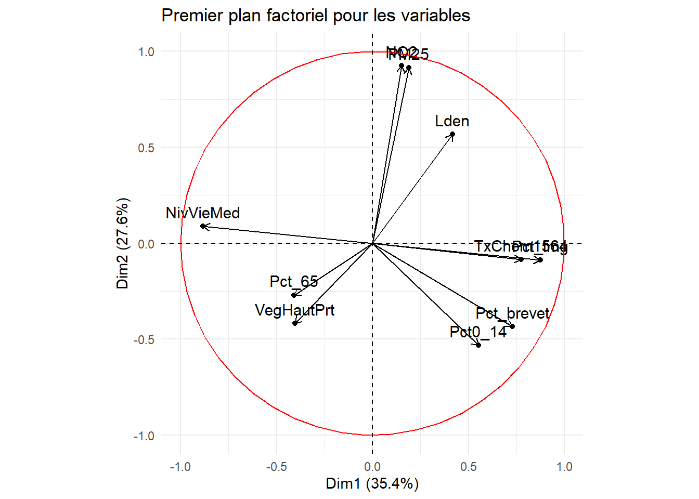
12.2.2.3 Résultats de l’ACP pour les individus
Comme pour les variables, nous retrouvons les mêmes mesures pour les individus : les coordonnées factorielles, les cosinus carrés et les contributions. Les coordonnées factorielles des individus sont les projections orthogonales des observations sur l’axe. Puisqu’en ACP normée, les variables utilisées pour l’ACP sont centrées réduites, la moyenne des coordonnées factorielles des individus pour un axe est toujours égale à zéro. En revanche, contrairement aux coordonnées factorielles pour les variables, les coordonnées pour les individus ne varient pas de -1 à 1! Les cosinus carrés quantifient à quel point chaque axe représente chaque individu. Enfin, les contributions quantifient l’apport de chaque individu à la formation d’un axe.
Si le jeu de données comprend peu d’observations, il est toujours possible de créer un nuage de points des individus sur le premier plan factoriel sur lequel vous pouvez ajouter les étiquettes permettant d’identifier les observations (figure fig-acp1erplanfactIndiv). Ce graphique est rapidement illisible lorsque le nombre d’observations est important. Il peut rester utile si certaines des observations du jeu de données doivent faire l’objet d’une analyse spécifique.
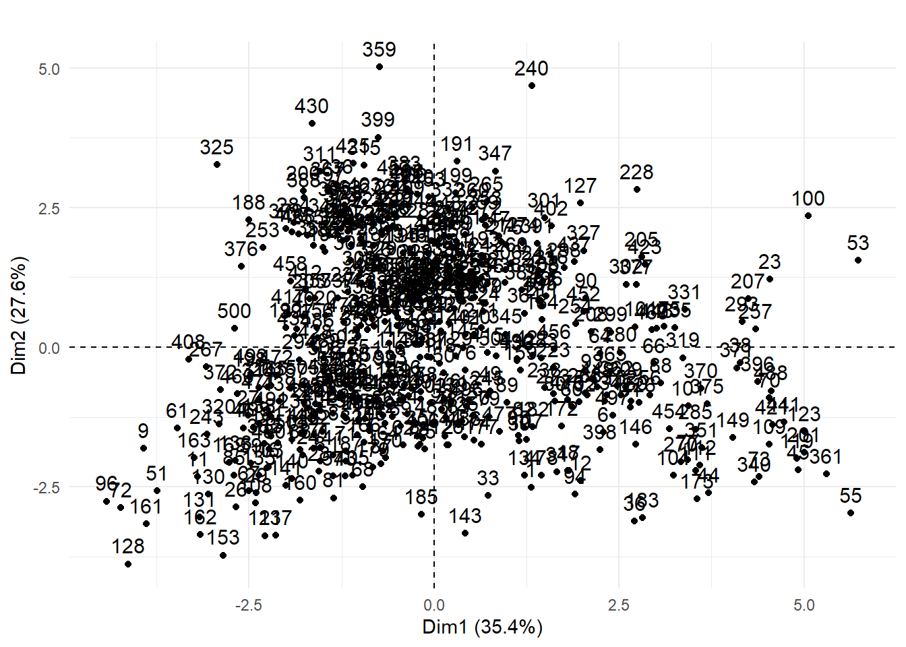
Lorsque les observations sont des unités spatiales, il est très intéressant de cartographier les coordonnées factorielles des individus (figure fig-acp1erplanfactIndiv). À la lecture de la carte choroplèthe de gauche (axe 1), nous pouvons constater que le niveau de défavorisation socioéconomique est élevé dans l’est (IRIS en vert), et inversement, très faible à l’ouest de l’agglomération (IRIS en rouge). À la lecture de la carte de droite (axe 2), sans surprise, la partie centrale de l’agglomération est caractérisée par des niveaux de pollution atmosphérique et de bruit routier bien plus élevés qu’en périphérie.
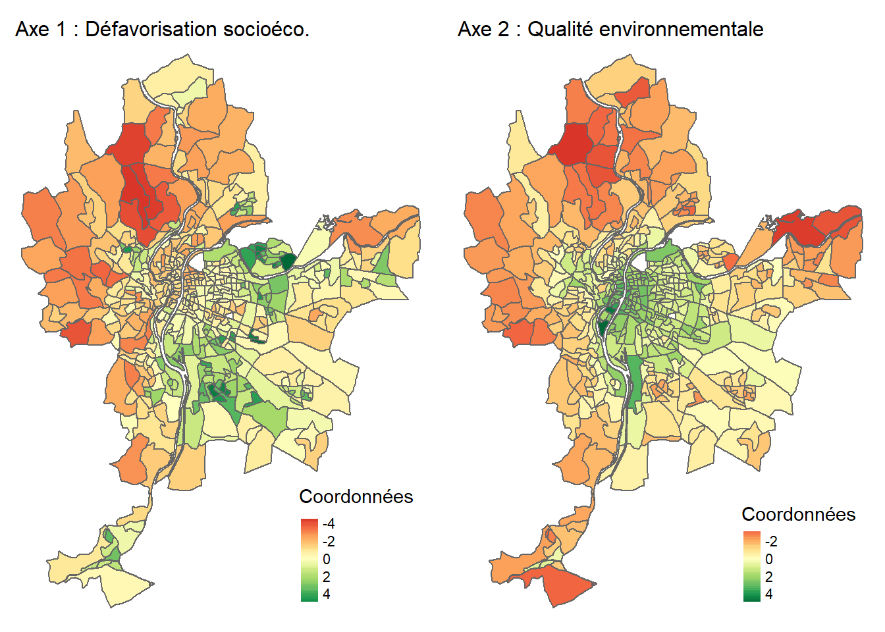
Autres éléments intéressants de l’ACP
Ajout de variables ou d’individus supplémentaires
Premièrement, il est possible d’ajouter des variables continues ou des individus supplémentaires qui n’ont pas été pris en compte dans le calcul de l’ACP (figure fig-acpvarindcorrsuppl). Concernant les variables continues supplémentaires, il s’agit simplement de calculer leurs corrélations avec les axes retenus de l’ACP. Concernant les individus, il s’agit de les projeter sur les axes factoriels. Pour plus d’informations sur le sujet, consultez les excellents ouvrages de Ludovic Lebart, Alain Morineau et Marie Piron (1995, 42‑45) ou encore de Jérôme Pagès (2013, 22‑24).
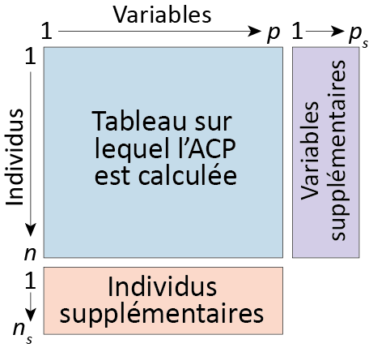
Pondération des individus et des variables
Deuxièmement, il est possible de pondérer à la fois les individus et, plus rarement, les variables lors du calcul de l’ACP.
Analyse en composantes principales non paramétrique
Troisièmement, il est possible de calculer une ACP sur des variables préalablement transformées en rang (section sec-02552). Cela peut être justifié lorsque les variables sont très anormalement distribuées en raison de valeurs extrêmes. Les coordonnées factorielles pour les variables sont alors le coefficient de Spearman (section sec-0433) et non de Pearson. Aussi, les variables sont centrées non pas sur leurs moyennes respectives, mais sur leurs médianes. Pour plus d’informations sur cette approche, consultez de nouveau Lebart et al. (1995, 51‑52).
Analyse en composantes principales robuste
Finalement, d’autres méthodes plus avancées qu’une ACP non paramétrique peuvent être utilisées afin d’obtenir des composantes principales qui ne sont pas influencées par des valeurs extrêmes : les ACP robustes (Rivest et Plante 1988; Hubert, Rousseeuw et Vanden Branden 2005) qui peuvent être mises en œuvre, entre autres avec le package roscpca.
12.2.3 Mise en œuvre dans R
Plusieurs packages permettent de calculer une ACP dans R, notamment psych avec la fonction principal, ade4 avec la fonction dudi.pca et FactoMineR(Lê, Josse et Husson 2008) avec la fonction PCA. Ce dernier est certainement le plus abouti. De plus, il permet également de calculer une analyse des correspondances (AFC), une analyse des correspondances multiples (ACM) et une analyse factorielle de données mixtes (AFDM). Nous utilisons donc FactoMineR pour mettre en œuvre les trois types de méthodes factorielles abordées dans ce chapitre (ACP, AFC et ACM). Pour l’ACP, nous exploitons un jeu de données issu du package geocmeans qu’il faut préalablement charger à l’aide des lignes de code suivantes.
12.2.3.1 Calcul et exploration d’une ACP avec FactoMineR
Pour calculer l’ACP, il suffit d’utiliser la fonction PCA de FactoMineR, puis la fonction summary(MonACP) qui renvoie les résultats de l’ACP pour :
Les valeurs propres (section
Eigenvalues) pour les composantes principales (Dim.1àDim.n) avec leur variance expliquée brute (Variance) en pourcentage (% of var.) et en pourcentage cumulé (Cumulative % of var.).Les dix premières observations (section
Individuals) avec les coordonnées factorielles (Dim.1àDim.n), les contributions (ctr) et les cosinus carrés (cos2). Pour accéder aux résultats pour toutes les observations, utilisez les fonctionsres.acp$indou encoreres.acp$ind$coord(uniquement les coordonnées factorielles),res.acp$ind$contrib(uniquement les contributions) etres.acp$ind$cos2(uniquement les cosinus carrés).Les variables (section
Variables) avec les coordonnées factorielles (Dim.1àDim.n), les contributions (ctr) et les cosinus carrés (cos2).
library(FactoMineR)
# Version classique avec FactoMineR
# Construction d'une ACP sur les colonnes 2 à 11 du DataFrame Data
res.acp <- PCA(Data[,2:11], scale.unit = TRUE, graph = FALSE)
# Affichage des résultats de la fonction PCA
print(res.acp)**Results for the Principal Component Analysis (PCA)**
The analysis was performed on 506 individuals, described by 10 variables
*The results are available in the following objects:
name description
1 "$eig" "eigenvalues"
2 "$var" "results for the variables"
3 "$var$coord" "coord. for the variables"
4 "$var$cor" "correlations variables - dimensions"
5 "$var$cos2" "cos2 for the variables"
6 "$var$contrib" "contributions of the variables"
7 "$ind" "results for the individuals"
8 "$ind$coord" "coord. for the individuals"
9 "$ind$cos2" "cos2 for the individuals"
10 "$ind$contrib" "contributions of the individuals"
11 "$call" "summary statistics"
12 "$call$centre" "mean of the variables"
13 "$call$ecart.type" "standard error of the variables"
14 "$call$row.w" "weights for the individuals"
15 "$call$col.w" "weights for the variables" # Résumé des résultats (valeurs propres, individus, variables)
summary(res.acp)
Call:
PCA(X = Data[, 2:11], scale.unit = TRUE, graph = FALSE)
Eigenvalues
Dim.1 Dim.2 Dim.3 Dim.4 Dim.5 Dim.6 Dim.7
Variance 3.543 2.760 1.042 0.751 0.606 0.388 0.379
% of var. 35.425 27.596 10.422 7.511 6.059 3.880 3.788
Cumulative % of var. 35.425 63.021 73.443 80.954 87.013 90.893 94.681
Dim.8 Dim.9 Dim.10
Variance 0.244 0.217 0.071
% of var. 2.441 2.167 0.711
Cumulative % of var. 97.122 99.289 100.000
Individuals (the 10 first)
Dist Dim.1 ctr cos2 Dim.2 ctr cos2 Dim.3
1 | 3.054 | 1.315 0.096 0.185 | -2.515 0.453 0.678 | 0.221
2 | 1.882 | 0.193 0.002 0.011 | -1.744 0.218 0.859 | 0.082
3 | 2.820 | 2.338 0.305 0.687 | -0.860 0.053 0.093 | -0.765
4 | 2.816 | -0.740 0.031 0.069 | 2.265 0.367 0.647 | 1.293
5 | 3.210 | -2.208 0.272 0.473 | -1.597 0.183 0.248 | 1.471
6 | 3.016 | 2.287 0.292 0.575 | -1.515 0.164 0.252 | 0.390
7 | 3.022 | -1.540 0.132 0.260 | -1.803 0.233 0.356 | 0.465
8 | 3.122 | -1.536 0.132 0.242 | -2.038 0.298 0.426 | -0.120
9 | 4.743 | -3.930 0.862 0.687 | -1.806 0.234 0.145 | 0.993
10 | 3.055 | 2.713 0.411 0.789 | 0.368 0.010 0.014 | -0.391
ctr cos2
1 0.009 0.005 |
2 0.001 0.002 |
3 0.111 0.074 |
4 0.317 0.211 |
5 0.411 0.210 |
6 0.029 0.017 |
7 0.041 0.024 |
8 0.003 0.001 |
9 0.187 0.044 |
10 0.029 0.016 |
Variables
Dim.1 ctr cos2 Dim.2 ctr cos2 Dim.3 ctr cos2
Lden | 0.417 4.920 0.174 | 0.567 11.640 0.321 | 0.508 24.799 0.258
NO2 | 0.153 0.657 0.023 | 0.926 31.068 0.857 | 0.192 3.540 0.037
PM25 | 0.189 1.007 0.036 | 0.915 30.355 0.838 | 0.035 0.117 0.001
VegHautPrt | -0.405 4.630 0.164 | -0.419 6.353 0.175 | 0.401 15.459 0.161
Pct0_14 | 0.552 8.605 0.305 | -0.533 10.281 0.284 | 0.076 0.553 0.006
Pct_65 | -0.409 4.730 0.168 | -0.271 2.658 0.073 | 0.716 49.258 0.513
Pct_Img | 0.874 21.559 0.764 | -0.089 0.288 0.008 | 0.106 1.077 0.011
TxChom1564 | 0.774 16.893 0.598 | -0.086 0.267 0.007 | -0.068 0.450 0.005
Pct_brevet | 0.727 14.936 0.529 | -0.434 6.813 0.188 | 0.219 4.612 0.048
NivVieMed | -0.884 22.062 0.782 | 0.088 0.278 0.008 | 0.038 0.136 0.001
Lden |
NO2 |
PM25 |
VegHautPrt |
Pct0_14 |
Pct_65 |
Pct_Img |
TxChom1564 |
Pct_brevet |
NivVieMed |Avec les fonctions de base barplot et plot, il est possible de construire rapidement des graphiques pour explorer les résultats de l’ACP pour les valeurs propres, les variables et les individus.
# Graphiques pour les valeurs propres
barplot(res.acp$eig[,1], main="Valeurs propres", names.arg=1:nrow(res.acp$eig))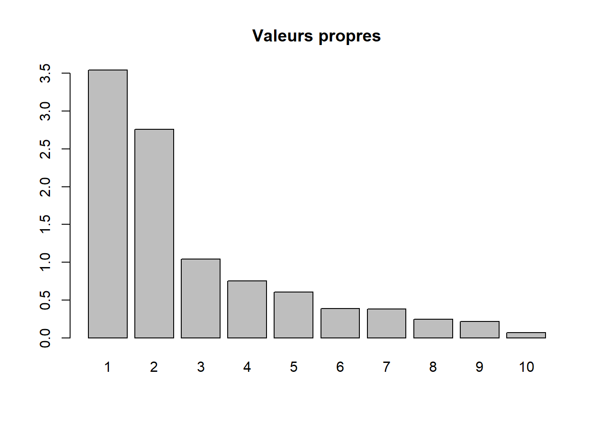
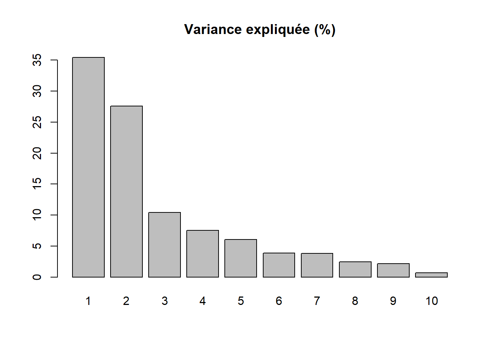
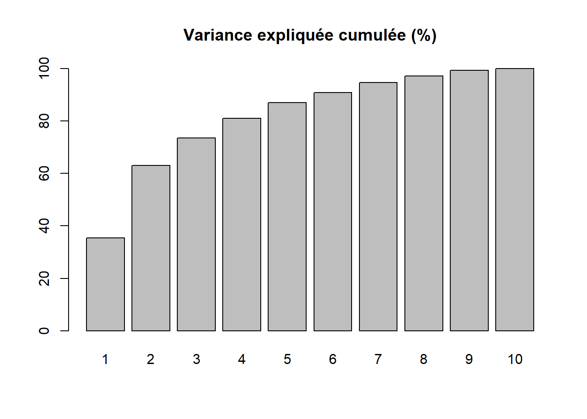
# Nuage du points du premier plan factoriel pour les variables et les individus
plot(res.acp, graph.type = "classic", choix = "var", axes = 1:2,
title = "Premier plan factoriel (variables)")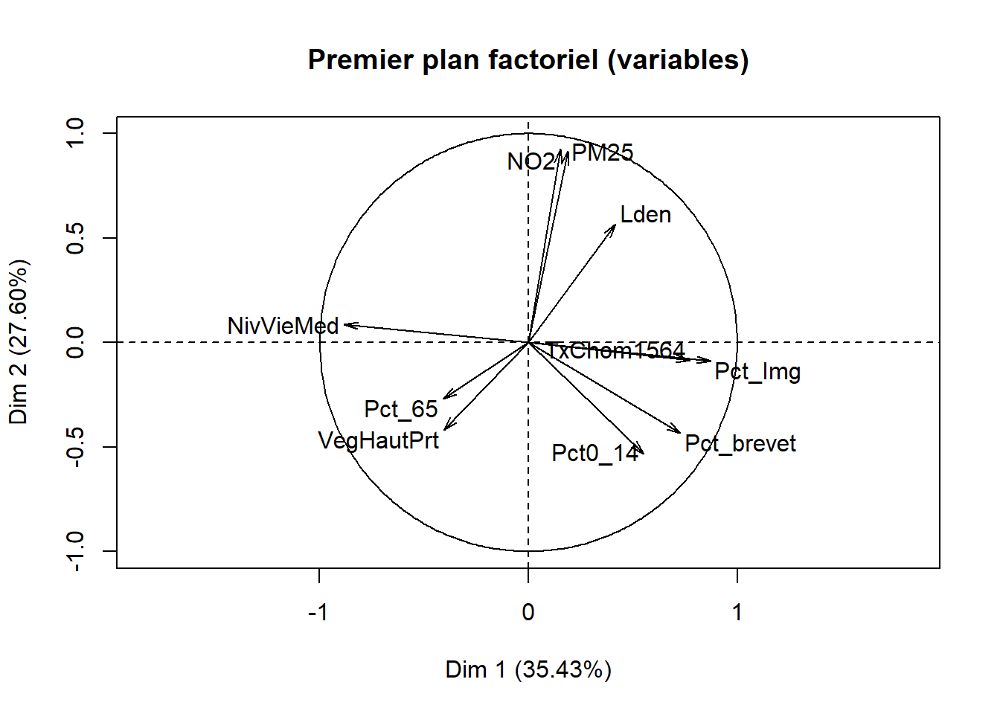
plot(res.acp, graph.type = "classic", choix = "ind", axes = 1:2,
title = "Premier plan factoriel (individus)")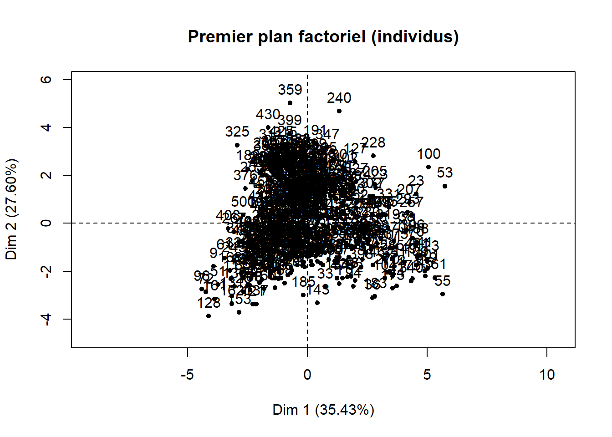
Pondérations pour les individus et les variables
Nous avons vu, dans un encadré ci-dessus, qu’il est possible d’ajouter des variables et des individus supplémentaires dans une ACP, ce que permet la fonction PCA de FactoMineR avec les paramètres ind.sup et quanti.sup. Aussi, pour ajouter des pondérations aux individus ou aux variables, utilisez les paramètres row.w et col.w. Pour plus d’informations sur ces paramètres, consulter l’aide de la fonction en tapant ?PCA dans la console de RStudio.
12.2.3.2 Exploration graphique des résultats de l’ACP avec factoextra
Visuellement, vous avez pu constater que les graphiques ci-dessus (pour les valeurs propres et pour le premier plan factoriel pour les variables et les individus), réalisés avec les fonctions de base barplot et plot, sont peu attrayants. Avec le package factoextra, quelques lignes de code suffissent pour construire des graphiques bien plus esthétiques.
Premièrement, la syntaxe ci-dessous renvoie deux graphiques pour analyser les résultats des valeurs propres (figure fig-factoextra1).
library(factoextra)
library(ggplot2)
library(ggpubr)
# Graphiques pour les variables propres avec factoextra
G1 <- fviz_screeplot(res.acp, choice ="eigenvalue", addlabels = TRUE,
x = "Composantes",
y = "Valeur propre",
title = "")
G2 <- fviz_screeplot(res.acp, choice ="variance", addlabels = TRUE,
x = "Composantes",
y = "Pourcentage de la variance expliquée",
title = "")
ggarrange(G1, G2)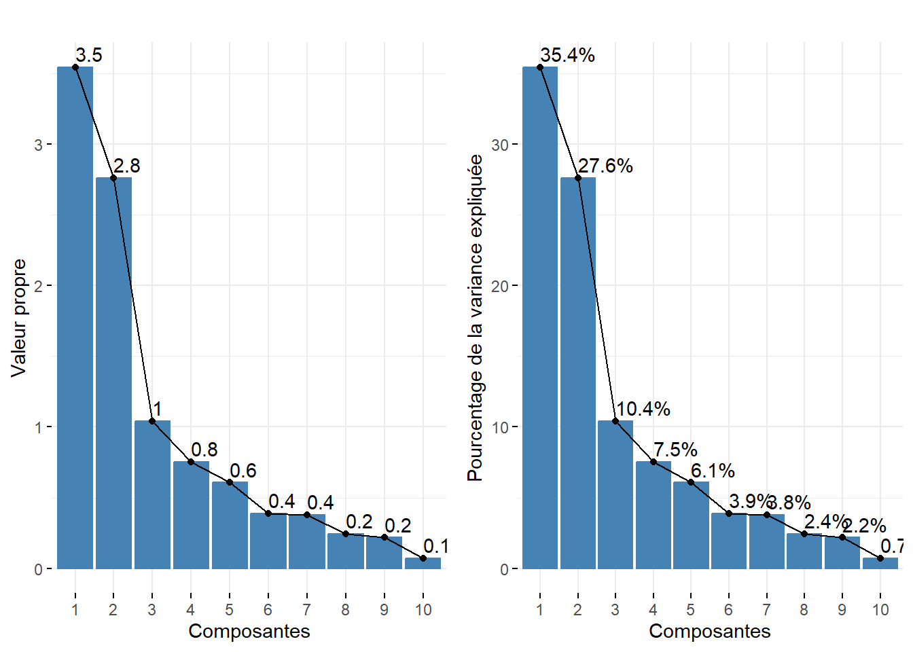
Deuxièmement, la syntaxe ci-dessous renvoie trois graphiques pour analyser les contributions de chaque variable aux deux premiers axes de l’ACP (figures fig-factoextra2 et fig-factoextra3) et la qualité de représentation des variables sur les trois premiers axes (figure fig-factoextra4), c’est-à-dire la somme des cosinus carrés sur les trois axes retenus.
# Contributions des variables aux deux premières composantes avec factoextra
fviz_contrib(res.acp, choice = "var", axes = 1, top = 10,
title = "Contributions des variables à la première composante")
fviz_contrib(res.acp, choice = "var", axes = 2, top = 10,
title = "Contributions des variables à la première composante")
fviz_cos2(res.acp, choice = "var", axes = 1:3)+
labs(x = "", y = "Somme des cosinus carrés sur les 3 axes retenus",
title = "Qualité de représentation des variables sur les axes retenus de l'ACP")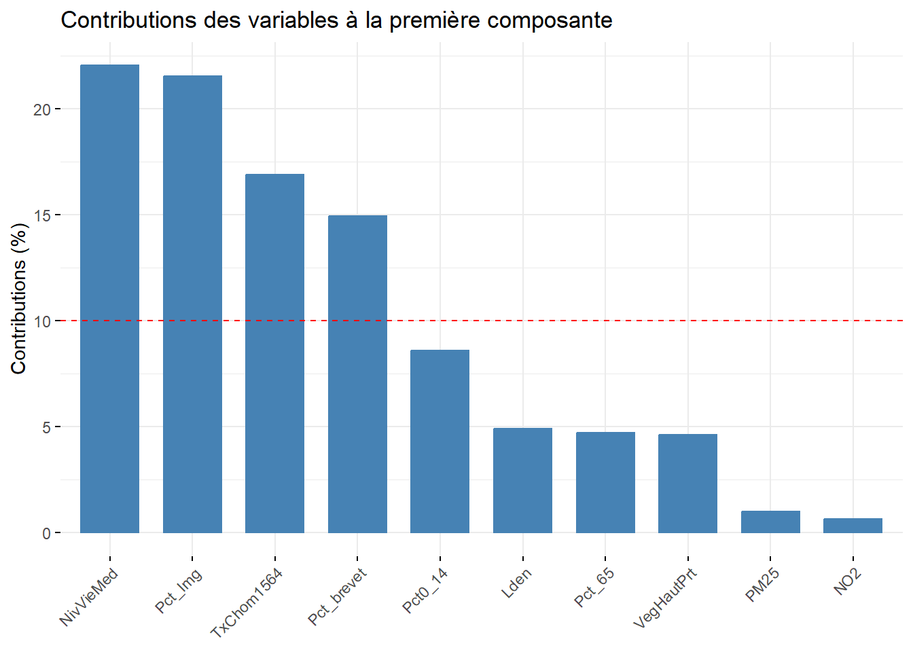
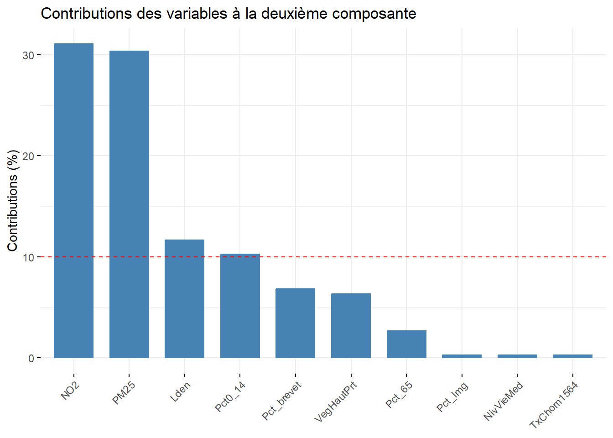
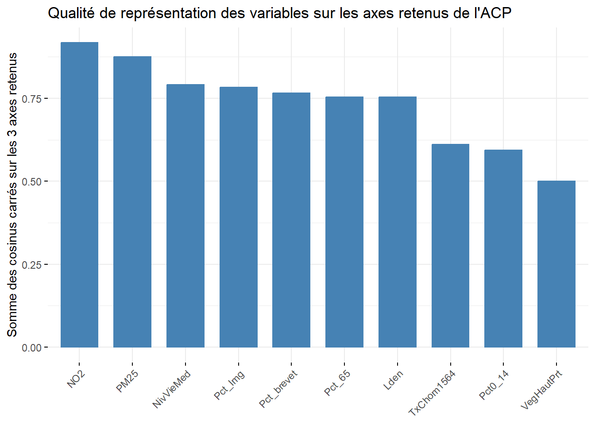
Troisièmement, le code ci-dessous renvoie un nuage de points pour le premier plan factoriel de l’ACP (axes 1 et 2) pour les variables (figure fig-factoextra5) et les individus (figure fig-factoextra6).
# Premier plan factoriel pour les variables avec factoextra
fviz_pca_var(res.acp, col.var="contrib",
title = "Premier plan factoriel pour les variables")+
scale_color_gradient2(low="#313695", mid="#ffffbf", high="#a50026",
midpoint=mean(res.acp$var$contrib[,1]))
# Premier plan factoriel pour les individus avec factoextra
fviz_pca_ind(res.acp, label = "none", title = "ACP. Individus")
fviz_pca_ind(res.acp, col.ind="cos2", title = "ACP. Individus") +
scale_color_gradient2(low="blue", mid="white", high="red", midpoint=0.50)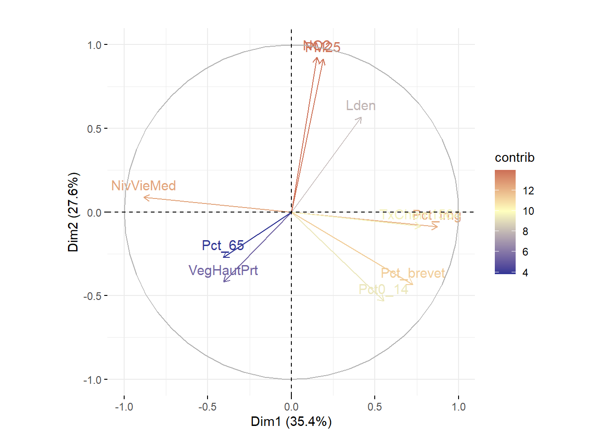
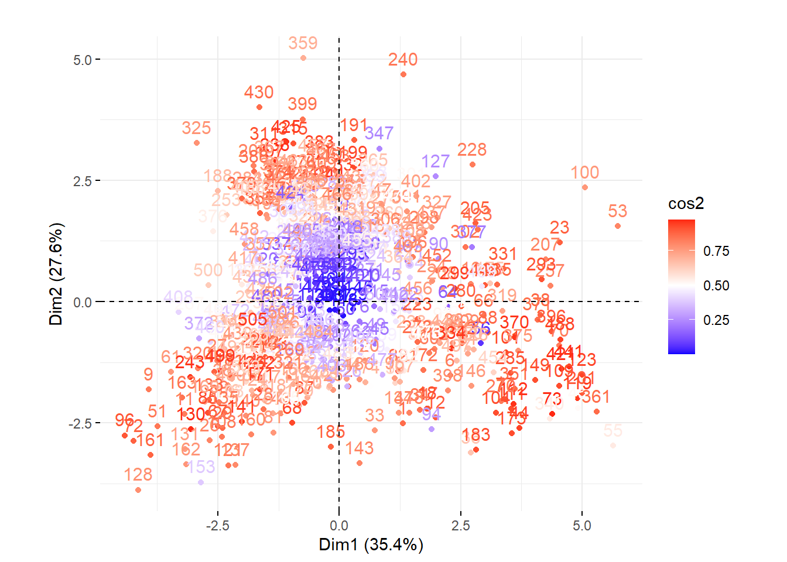
12.2.3.3 Personnalisation des graphiques avec les résultats de l’ACP
Avec un peu plus de lignes de code et l’utilisation d’autres packages (ggplot2, ggpubr, stringr, corrplot), vous pouvez aussi construire des graphiques personnalisés.
Premièrement, la syntaxe ci-dessous permet de réaliser trois graphiques pour analyser les valeurs propres (figure fig-acpmesgraphs1). Notez que, d’un coup d’œil, nous pouvons identifier les composantes principales avec une valeur propre égale ou supérieure à 1.
library(ggplot2)
library(ggpubr)
library(stringr)
library(corrplot)
# Calcul de l'ACP
res.acp <- PCA(Data[,2:11], ncp=5, scale.unit = TRUE, graph = FALSE)
print(res.acp)
# Construction d'un DataFrame pour les valeurs propres
dfACPvp <- data.frame(res.acp$eig)
names(dfACPvp) <- c("VP" , "VP_pct" , "VP_cumupct")
dfACPvp$Composante <- factor(1:nrow(dfACPvp), levels = rev(1:nrow(dfACPvp)))
couleursAxes <- c("steelblue" , "skyblue2")
vpsup1 <- round(sum(subset(dfACPvp, VP >= 1)$VP),2)
vpsup1cumul <- round(sum(subset(dfACPvp, VP >= 1)$VP_pct),2)
plotVP1 <- ggplot(dfACPvp, aes(x = VP, y = Composante, fill = VP<1))+
geom_bar(stat = "identity", width = .6, alpha = .8, color = "black")+
geom_vline(xintercept = 1, linetype = "dashed", color = "azure4", linewidth = 1)+
scale_fill_manual(name = "Valeur\npropre" , values = couleursAxes, labels = c(">= 1" , "< 1"))+
labs(x = "Valeur propre", y = "Composante principale")
plotVP2 <- ggplot(dfACPvp, aes(x = VP_pct, y = Composante, fill = VP<1))+
geom_bar(stat = "identity", width = .6, alpha = .8, color = "black")+
scale_fill_manual(name = "Valeur\npropre" , values = couleursAxes, labels = c(">= 1" , "< 1"))+
theme(legend.position = "none")+
labs(x = "Pourcentage de la variance expliquée", y = "")
plotVP3 <- ggplot(dfACPvp, aes(x = VP_cumupct, y = Composante, fill = VP<1, group=1))+
geom_bar(stat = "identity", width = .6, alpha = .8, color = "black")+
scale_fill_manual(name = "Valeur\npropre" , values = couleursAxes, labels = c(">= 1" , "< 1"))+
geom_line(colour = "brown", linetype = "solid", size=.8) +
geom_point(size=3, shape=21, color = "brown", fill = "brown")+
theme(legend.position = "none")+
labs(x = "Pourcentage cumulé de la variance expliquée", y = "")
text1 <- paste0("Somme des valeurs propres supérieures à 1 : ",
vpsup1,
".\nPourcentage cumulé des valeurs propres supérieures à 1 : ",
vpsup1cumul, "%.")
annotate_figure(ggarrange(plotVP1, plotVP2, plotVP3, ncol = 2, nrow = 2),
text_grob("Analyse des valeurs propres",
color = "black", face = "bold", size = 12),
bottom = text_grob(text1,
color = "black", hjust = 1, x = 1, size = 10))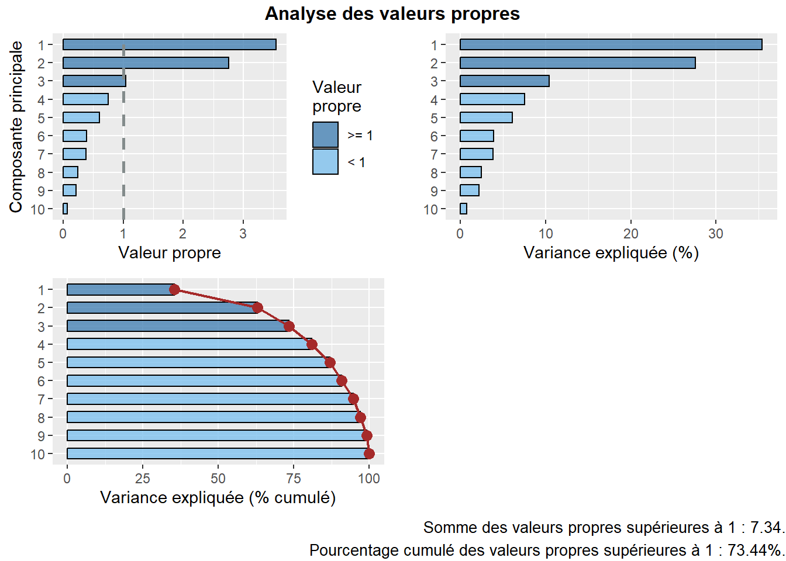
Deuxièmement, la syntaxe ci-dessous permet de :
Construire un DataFrame avec les résultats des variables.
Construire des histogrammes avec les coordonnées des variables sur les axes factoriels (figure fig-acpmesgraphs2). Notez que les coordonnées négatives sont indiquées avec des barres bleues et celles positives, avec des barres de couleur saumon.
Un graphique avec les contributions des variables sur les axes retenus (figure fig-acpmesgraphs3).
Un graphique avec les cosinus carrés des variables sur les axes retenus (figure fig-acpmesgraphs4).
Un histogramme avec la qualité des variables sur les axes retenus (figure fig-acpmesgraphs5), soit la sommation de leurs cosinus carrés sur les axes retenus.
# Analyse des résultats de L'ACP pour les variables
library(corrplot)
library(stringr)
library(ggplot2)
library(ggpubr)
# Indiquer le nombre d'axes à conserver suite à l'analyse des valeurs propres
nComp <- 3
# Variance expliquée par les axes retenus
vppct <- round(dfACPvp[1:nComp,"VP_pct"],1)
# Dataframe des résultats pour les variables
CoordsVar <- res.acp$var$coord[, 1:nComp]
Cos2Var <- res.acp$var$cos2[, 1:nComp]
CtrVar <- res.acp$var$contrib[, 1:nComp]
dfACPVars <- data.frame(Variable = row.names(res.acp$var$coord[, 1:nComp]),
Coord = CoordsVar,
Cos2 = Cos2Var,
Qualite = rowSums(Cos2Var),
Ctr = CtrVar)
row.names(dfACPVars) <- NULL
names(dfACPVars) <- str_replace(names(dfACPVars), ".Dim.", "Comp")
dfACPVars
# Histogrammes pour les coordonnées
couleursCoords <- c("lightsalmon" , "steelblue")
plotCoordF1 <- ggplot(dfACPVars,
aes(y = reorder(Variable, CoordComp1),
x = CoordComp1, fill = CoordComp1<0))+
geom_bar(stat = "identity", width = .6, alpha = .8, color = "black")+
geom_vline(xintercept = 0, color = "black", linewidth = 1)+
scale_fill_manual(name = "Coordonnée" , values = couleursCoords,
labels = c("Positive" , "Négative"))+
labs(x = paste0("Axe 1 (", vppct[1],"%)"), y = "Variable")+
theme(legend.position = "none")
plotCoordF2 <- ggplot(dfACPVars,
aes(y = reorder(Variable, CoordComp2),
x = CoordComp2, fill = CoordComp2<0))+
geom_bar(stat = "identity", width = .6, alpha = .8, color = "black")+
geom_vline(xintercept = 0, color = "black", linewidth = 1)+
scale_fill_manual(name = "Coordonnée" , values = couleursCoords,
labels = c("Positive" , "Négative"))+
labs(x = paste0("Axe 2 (", vppct[2],"%)"), y = "Variable")+
theme(legend.position = "none")
plotCoordF3 <- ggplot(dfACPVars,
aes(y = reorder(Variable, CoordComp3),
x = CoordComp3, fill = CoordComp3<0))+
geom_bar(stat = "identity", width = .6, alpha = .8, color = "black")+
geom_vline(xintercept = 0, color = "black", linewidth = 1)+
scale_fill_manual(name = "Coordonnée", values = couleursCoords,
labels = c("Positive" , "Négative"))+
labs(x = paste0("Axe 3 (", vppct[3],"%)"), y = "Variable")
annotate_figure(ggarrange(plotCoordF1, plotCoordF2, plotCoordF3, nrow = nComp),
text_grob("Coordonnées des variables sur les axes factoriels",
color = "black", face = "bold", size = 12))
# Contributions des variables à la formation des axes
corrplot(CtrVar, is.corr = FALSE, method ="square",
addCoef.col = 1, cl.pos = FALSE)
# La qualité des variables sur les composantes retenues : cosinus carrés
corrplot(Cos2Var, is.corr = FALSE, method ="square",
addCoef.col = 1, cl.pos = FALSE)
ggplot(dfACPVars)+
geom_bar(aes(y = reorder(Variable, Qualite), x=Qualite),
stat = "identity", width = .6, alpha = .8, fill = "steelblue")+
labs(x = "", y = "Somme des cosinus carrés sur les axes retenus",
title = "Qualité de représentation des variables sur les axes retenus de l'ACP",
subtitle = paste0("Variance expliquée par les ", nComp,
" composantes : ", sum(vppct), "%"))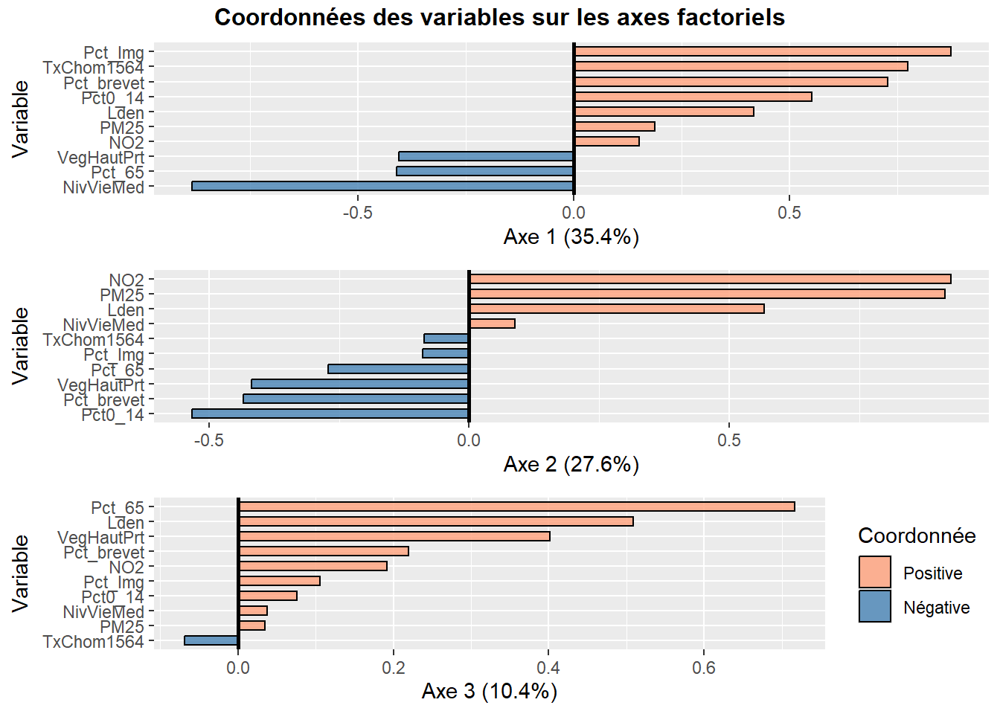
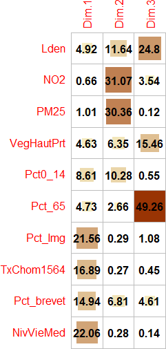
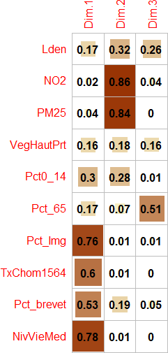
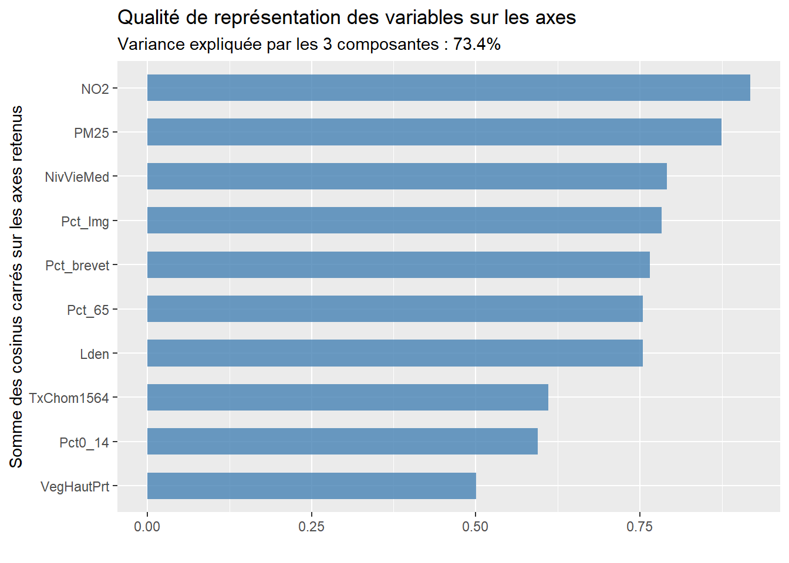
Troisièmement, lorsque les observations sont des unités spatiales, il convient de cartographier les coordonnées factorielles des individus. Dans le jeu de données utilisé, les observations sont des polygones délimitant les îlots regroupés pour l’information statistique (IRIS) pour l’agglomération de Lyon (France). Nous utilisons les packages tmap et RColorBrewer pour réaliser des cartes choroplèthes avec les coordonnées des deux premières composantes (figure fig-acpmesgraphs6).
library("tmap")
library("RColorBrewer")
# Analyse des résultats de l'ACP pour les individus
# Dataframe des résultats pour les individus
CoordsInd <- res.acp$ind$coord[, 1:nComp]
Cos2Ind <- res.acp$ind$cos2[, 1:nComp]
CtrInd <- res.acp$ind$contrib[, 1:nComp]
dfACPInd <- data.frame(Coord = CoordsInd, Cos2 = Cos2Ind, Ctr = CtrInd)
names(dfACPInd) <- str_replace(names(dfACPInd), ".Dim.", "Comp")
# Fusion du tableau original avec les résultats de l'ACP pour les individus
CartoACP <- cbind(LyonIris, dfACPInd)
# Cartographie des coordonnées factorielles pour les individus pour les
# deux premières composantes
Carte1 <- tm_shape(CartoACP) +
tm_polygons(col = "CoordComp1", style = "cont",
midpoint = 0, title = "Coordonnées")+
tm_layout(main.title = paste0("Axe 1 (", vppct[1],"%)"),
attr.outside = TRUE, frame = FALSE, main.title.size = 1)
Carte2 <- tm_shape(CartoACP) +
tm_polygons(col = "CoordComp2", style = "cont",
midpoint = 0, title = "Coordonnées")+
tm_layout(main.title = paste0("Axe 2 (", vppct[2],"%)"),
attr.outside = TRUE, frame = FALSE, main.title.size = 1)
tmap_arrange(Carte1, Carte2)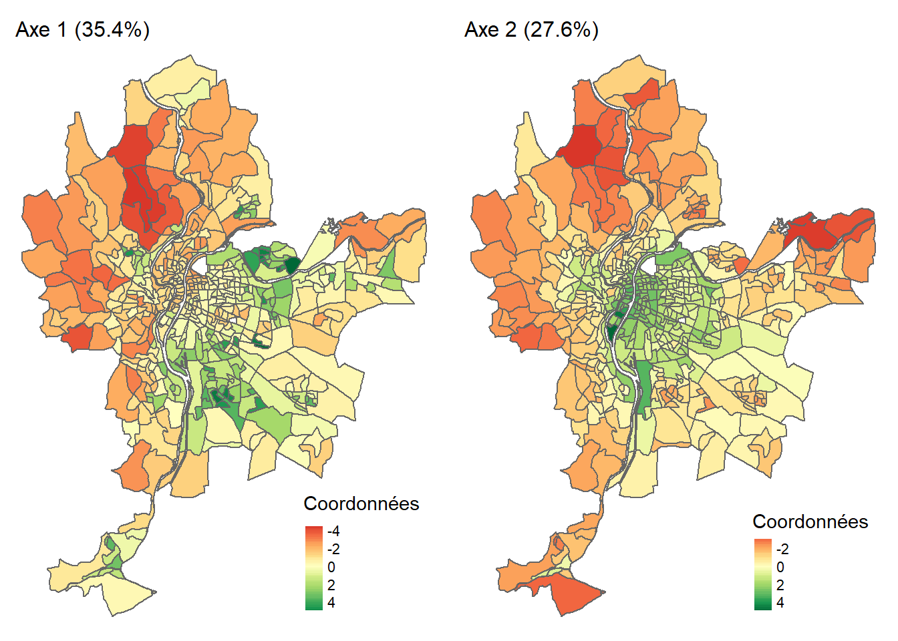
Exploration interactive des résultats d’une ACP avec le package explor.
Vous avez compris qu’il ne suffit pas de calculer une ACP, il faut retenir les n premiers axes de l’ACP qui nous semblent les plus pertinents, puis les interpréter à la lecture des coordonnées factorielles, des cosinus carrés et des contributions des variables et des individus sur les axes. Il faut donc bien explorer les résultats à l’aide de tableaux et de graphiques! Cela explique que nous avons mobilisé de nombreux graphiques dans les deux sections précédentes (sec-12232 et sec-12233). L’exploration des données d’une ACP peut aussi être réalisée avec des graphiques interactifs. Or, un superbe package dénommé explor, reposant sur Shiny, permet d’explorer de manière interactive les résultats de plusieurs méthodes factorielles calculés avec FactorMinerR. Pour cela, il vous suffit de lancer les deux lignes de code suivantes :
explor(res.acp)
Finalement, explor permet également d’explorer les résultats d’une analyse des correspondances (AFC) et d’une analyse des correspondances multiples (ACM).
12.3 Analyse factorielle des correspondances (AFC)
AFC et tableau de contingence
Pour bien comprendre l’AFC, il est essentiel de bien maîtriser les notions de tableau de contingence (marges du tableau, fréquences observées et théoriques, pourcentages en ligne et en colonne, contributions au khi-deux) et de distance du khi-deux. Si ce n’est pas le cas, il est conseillé de (re)lire le chapitre sec-chap05.
Dans le chapitre sec-chap05, nous avons vu comment construire un tableau de contingence (figure fig-AnalysesFactoriellesTabAFCFig) à partir de deux variables qualitatives comprenant plusieurs modalités, puis comment vérifier s’il y a dépendance entre les deux variables qualitatives avec le test du khi-deux. Or, s’il y a bien dépendance, il est peut-être judicieux de résumer l’information que contient le tableau de contingence en quelques nouvelles variables synthétiques, objectif auquel répond l’analyse factorielle des correspondances (AFC).
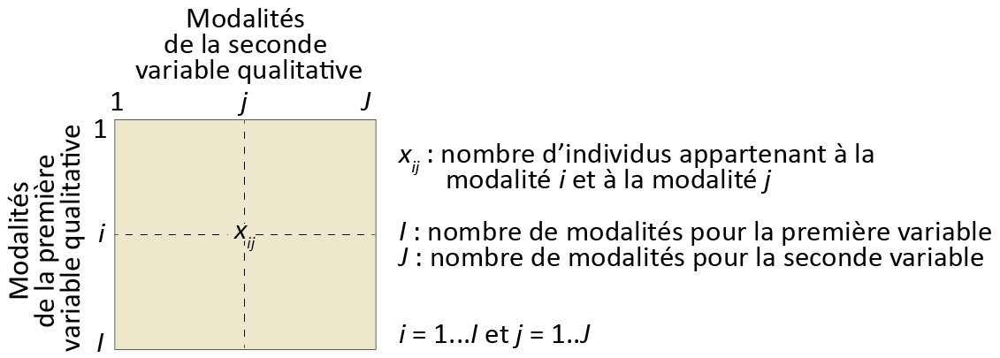
À titre de rappel (section sec-1212), l’AFC a été développée par le statisticien français Jean-Paul Benzécri (1973). Cela explique qu’elle est souvent enseignée et utilisée en sciences sociales dans les universités francophones, mais plus rarement dans les universités anglophones. Pourtant, les applications de l’AFC sont nombreuses dans différentes disciplines des sciences sociales comme illustrées avec les exemples suivants :
En géographie, les modalités de la première variable du tableau de contingence sont souvent des entités spatiales (régions, municipalités, quartiers, etc.) croisées avec les modalités d’une autre variable qualitative (catégories socioprofessionnelles, modes de transport, tranches de revenu des ménages ou des individus, etc.).
En économie régionale, nous pourrions vouloir explorer un tableau de contingence croisant des entités spatiales (par exemple, MRC au Québec, départements en France) et les effectifs d’emplois pour différents secteurs d’activité.
En sciences politiques, le recours à l’AFC peut être intéressant pour explorer les résultats d’une élection. Les deux variables qualitatives pourraient être les circonscriptions électorales et les partis politiques. Le croisement des lignes et des colonnes du tableau de contingence représenterait le nombre de votes obtenus par un parti politique j dans la circonscription électorale i. Appliquer une AFC sur un tel tableau de contingence permettrait de révéler les ressemblances entre les différents partis politiques et celles entre les circonscriptions électorales.
Appliquer une ACP sur un tableau de contingence : un bien mauvais calcul…
Il pourrait être tentant de transformer le tableau de contingence initial (tableau tbl-encadreAFCACP1) en un tableau avec les pourcentages en ligne (tableau tbl-encadreAFCACP2) afin de lui appliquer une analyse en composantes principales. Une telle démarche a deux inconvénients majeurs : chacune des modalités de la première variable qualitative (I) aurait alors le même poids; chacune des modalités de la deuxième variable (J) aurait aussi le même poids. Or, à la lecture des marges en ligne et en colonne au tableau tbl-encadreAFCACP1), il est clair que les modalités j1 et i1 comprennent bien plus d’individus que les autres modalités respectives.
Si nous reprenons le dernier exemple applicatif, cela signifierait que le même poids est accordé à chaque parti puisque les variables sont centrées réduites en ACP (moyenne = 0 et variance = 1). Autrement dit, les grands partis traditionnels seraient ainsi sur le pied d’égalité que les autres partis. Aussi, chaque circonscription électorale aurait le même poids bien que certaines comprennent bien plus d’électeurs et d’électrices que d’autres.
| j1 | j2 | j3 | j4 | j5 | Marge (ligne) | |
|---|---|---|---|---|---|---|
| i1 | 357 060 | 22 010 | 276 625 | 65 000 | 29 415 | 750 110 |
| i2 | 427 530 | 26 400 | 295 860 | 69 410 | 30 645 | 849 845 |
| i3 | 147 500 | 6 545 | 34 545 | 4 415 | 1 040 | 194 045 |
| i4 | 128 520 | 6 405 | 42 925 | 6 565 | 2 670 | 187 085 |
| Marge (colonne) | 1 060 610 | 61 360 | 649 955 | 145 390 | 63 770 | 1 981 085 |
| V1 | V2 | V3 | V4 | V5 | |
|---|---|---|---|---|---|
| i1 | 47,6 | 2,9 | 36,9 | 8,7 | 3,9 |
| i2 | 50,3 | 3,1 | 34,8 | 8,2 | 3,6 |
| i3 | 76,0 | 3,4 | 17,8 | 2,3 | 0,5 |
| i4 | 68,7 | 3,4 | 22,9 | 3,5 | 1,4 |
12.3.1 Recherche d’une simplification basée sur la distance du khi-deux
Sur le plan mathématique et des objectifs visés, l’AFC est similaire à l’ACP puisqu’elle permet d’explorer un tableau de trois façons : 1) en montrant les ressemblances entre un ensemble d’individus (I), 2) en révélant les liaisons entre les variables (J) et 3) en résumant le tout avec des variables synthétiques. Toutefois, avec l’AFC, les ensembles I et J sont les modalités de deux variables qualitatives (dont le croisement forme un tableau de contingence) et elle est basée sur la distance du khi-deux (et non sur la distance euclidienne comme en ACP).
Ainsi, avec la distance du khi-deux, la proximité (ressemblance) entre deux lignes (i et l) et deux colonnes (j et k) est mesurée comme suit :
\[ d_{\chi_{il}^2} = \sum_j \frac{1}{f_{.j}}(\frac{f_{ij}}{f_{i.}}-\frac{f_{lj}}{f_{l.}})^2 \tag{12.5}\]
\[ d_{\chi_{jk}^2} = \sum_i \frac{1}{f_{i.}}(\frac{f_{ij}}{f_{.j}}-\frac{f_{ik}}{f_{.k}})^2 \tag{12.6}\]
Prenons un exemple fictif pour calculer ces deux distances. Le tableau tbl-afcdataex1 comprend trois modalités en ligne (I) et trois autres en colonne (J). Le total des effectifs de ce tableau de contingence est égal à 1 665.
À partir des données brutes, il est facile de construire deux tableaux : le profil des lignes et le profil des colonnes (tableau tbl-afcProfilsLignesCols, c’est-à-dire les proportions en ligne et en colonne.
| j1 | j2 | j3 | Total (ligne) | |
|---|---|---|---|---|
| i1 | 360 | 65 | 275 | 700 |
| i2 | 420 | 70 | 290 | 780 |
| i3 | 145 | 5 | 35 | 185 |
| Total (colonne) | 925 | 140 | 600 | 1 665 |
| j1 | j2 | j3 | Total | |
|---|---|---|---|---|
| Profil des lignes | ||||
| i1 | 0,514 | 0,093 | 0,393 | 1 |
| i2 | 0,538 | 0,090 | 0,372 | 1 |
| i3 | 0,784 | 0,027 | 0,189 | 1 |
| Profils des colonnes | ||||
| i1 | 0,389 | 0,464 | 0,458 | |
| i2 | 0,454 | 0,500 | 0,483 | |
| i3 | 0,157 | 0,036 | 0,058 | |
| Total | 1,000 | 1,000 | 1,000 | |
En divisant les valeurs du tableau tbl-afcdataex1 par le grand total (1 665), nous obtenons tous les termes utilisés dans les équations eq-khideuxlignes et eq-khideuxcolonnes au tableau tbl-afcdataex2 :
- Les fréquences relatives dénommées \(f_{ij}\).
- La marge \(fi.\) est égale à la somme des fréquences relatives en ligne.
- La marge \(f.j\) est égale à la somme des fréquences relatives en colonne.
- La somme de toutes les fréquences relatives est donc égale à 1, soit \(\sum{f_{i.}}\) ou \(\sum{f_{.j}}\).
| j1 | j2 | j3 | Total (fi.) | |
|---|---|---|---|---|
| i1 | 0,216 | 0,039 | 0,165 | 0,420 |
| i2 | 0,252 | 0,042 | 0,174 | 0,468 |
| i3 | 0,087 | 0,003 | 0,021 | 0,111 |
| Total (f.j) | 0,556 | 0,084 | 0,360 | 1,000 |
Il est possible de calculer les distances entre les différentes modalités de I en appliquant l’équation eq-khideuxlignes; par exemple, la distance entre les observations i1 et i2 est égale à :
\[d_{(i1,i2)}=\frac{\mbox{1}}{\mbox{0,556}}(\mbox{0,216}-\mbox{0,252})^2+\frac{\mbox{1}}{\mbox{0,084}}(\mbox{0,039}-\mbox{0,042})^2+ \frac{\mbox{1}}{\mbox{0,360}}(\mbox{0,165}-\mbox{0,174})^2=\mbox{0,003}\]
Avec l’équation eq-khideuxcolonnes, la distance entre les modalités j1 et j2 de J est égale à :
\[d_{(j1,j2)}=\frac{\mbox{1}}{\mbox{0,420}}(\mbox{0,216}-\mbox{0,039})^2+ \frac{\mbox{1}}{\mbox{0,468}}(\mbox{0,252}-\mbox{0,042})^2 + \frac{\mbox{1}}{\mbox{0,111}}(\mbox{0,087}-\mbox{0,003})^2=\mbox{0,233}\]
À la lecture du tableau tbl-MatriceDistKhi, les modalités les plus semblables sont i1 et i2 (0,003) pour I et j1 et j3 (0,058) pour J.
| Ind. | i1 | i2 | i3 | Col. | j1 | j2 | j3 |
|---|---|---|---|---|---|---|---|
| i1 | 0,000 | 0,003 | 0,103 | j1 | 0,000 | 0,233 | 0,058 |
| i2 | 0,003 | 0,000 | 0,132 | j2 | 0,233 | 0,000 | 0,078 |
| i3 | 0,103 | 0,132 | 0,000 | j3 | 0,058 | 0,078 | 0,000 |
Finalement, l’approche pour déterminer les axes factoriels de l’AFC est similaire à celle de l’ACP : les axes factoriels sont les droites orthogonales qui minimisent les distances aux points du profil des lignes, excepté que la métrique pour mesurer ces distances est celle du khi-deux (et non celle la distance euclidienne comme pour l’ACP). Pour plus détails sur le calcul de ces axes (notamment les formulations matricielles), consultez notamment Benzécri (1973), Escofier et Pagès (1998) et Lebart et al. (1995).
12.3.2 Aides à l’interprétation
Pour illustrer les aides à l’interprétation de l’AFC, nous utilisons un jeu de données spatiales extrait du profil du recensement de 2016 de Statistique Canada pour les secteurs de recensement de l’île de Montréal. La liste des modalités des variables qu’il comprend est reportée au tableau tbl-dataAfc. L’AFC est calculée sur un tableau de contingence croisant les secteurs de recensement (lignes) et les modalités d’une variable relative au mode de transport utilisé pour les déplacements domicile-travail (colonnes). Ces modalités sont cartographiées à la figure fig-cartovarAFC).
| Nom | Intitulé | Somme | |
|---|---|---|---|
| Modalités de la variable utilisée dans l'AFC (mode de transport) | |||
| VehCond | VehCond | Véhicule motorisé (conducteur·trice) | 427 560 |
| VehPass | VehPass | Véhicule motorisé (passager·ère) | 26 490 |
| TranspC | TranspC | Transport en commun | 295 800 |
| Apied | Apied | À pied | 69 330 |
| Velo | Velo | Bicyclette | 30 615 |
| AutreMoyen | AutreMoyen | Autre moyen | 7 750 |
| Modalités de la variable supplémentaire (durée du trajet) | |||
| T15min | T15min | Moins de 15 minutes | 130 435 |
| T1529min | T1529min | 15 à 29 minutes | 287 500 |
| T3044min | T3044min | 30 à 44 minutes | 244 425 |
| T4559min | T4559min | 45 à 59 minutes | 107 065 |
| T60plus | T60plus | 60 minutes et plus | 88 050 |
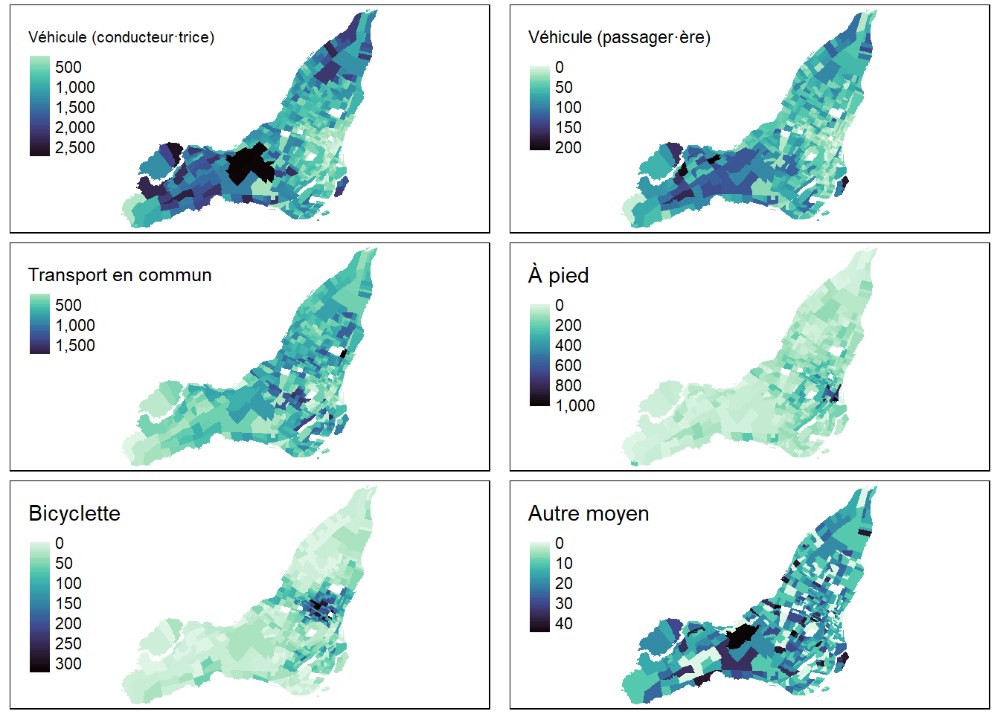
12.3.2.1 Résultats de l’AFC pour les valeurs propres
Avant de calculer l’AFC, il convient de vérifier s’il y a bien une dépendance entre les modalités des deux variables qualitatives. En effet, si les deux variables sont indépendantes, il n’est pas nécessaire de résumer le tableau de contingence avec une AFC. Pour ce faire, nous utilisons le test du khi-deux largement décrit à la section sec-052. Les résultats de ce test signalent qu’il existe des associations entre les modalités des deux variables (\(\chi\) = 203 971, p < 0,001, tableau tbl-dataafckhi2). Nous pouvons donc appliquer une AFC sur ce tableau de contingence.
| Mesure | Valeur |
|---|---|
| Modalités I (secteurs de recensement) | 521,00 |
| Modalités J (variable mode de transport) | 6,00 |
| Somme des données brutes (\(n_{ij}\)) | 857 545,00 |
| Khi-deux (\(\chi^2\)) | 207 129,27 |
| Degrés de liberté, soit \((c-1)\times(l-1)\) | 2 600,00 |
| Valeur de p | 0,00 |
| Coefficient Phi au carré (\(\phi^2=\chi^2 / n_{ij})\) | 0,24 |
Nous avons vu qu’en ACP normée (section sec-12221), la somme des valeurs propres est égale au nombre de variables puisqu’elles sont centrées réduites. Par contre, en AFC, cette somme est égale à l’inertie totale du tableau de contingence, c’est-à-dire à la valeur du khi-deux divisée par le nombre total des effectifs bruts (soit le coefficient phi au carré, \(\phi^2\)) (section sec-052). Le tableau tbl-dataafcValeurPropres permet de vérifier que la somme des valeurs propres est bien égale au coefficient phi au carré :
\[\mbox{0,156}+\mbox{0,046}+\mbox{0,031}+\mbox{0,004}+\mbox{0,004} = \mbox{0,24}\]
\[\phi^2 = \chi^2 / n_{ij}=\mbox{203 971}/ \mbox{849 795} = \mbox{0,24}\]
| Axe factoriel | Valeur propre | Pourcentage | Pourc. cumulé | |
|---|---|---|---|---|
| dim 1 | 1 | 0,156 | 64,590 | 64,590 |
| dim 2 | 2 | 0,046 | 19,250 | 83,840 |
| dim 3 | 3 | 0,031 | 12,995 | 96,835 |
| dim 4 | 4 | 0,004 | 1,683 | 98,518 |
| dim 5 | 5 | 0,004 | 1,482 | 100,000 |
Combien d’axes d’une AFC faut-il retenir?
Approche statistique. Mike Bendixen (1995), cité dans l’excellent site STHDA, propose deux critères pour sélectionner les premiers axes d’une AFC : \(c_1= 1 / (l-1) \times 100\) et \(c_2= 1 / (c-1) \times 100\) avec l et c étant respectivement les nombres de modalités en ligne et en colonne. Autrement dit, lorsque les données sont distribuées aléatoirement, la valeur propre en pourcentage devrait être égale à \(c_1\) et celle de l’axe factoriel moyen à \(c_2\). Par conséquent, nous pourrions retenir uniquement les axes dont les valeurs propres en pourcentage excèdent : \(c_1 = \mbox{1}/(\mbox{521}-\mbox{1})\times \mbox{100}=\mbox{0,19 }%\) et \(c_2=\mbox{1}/(\mbox{6}-\mbox{1})\times \mbox{100}=\mbox{20 }%\). En appliquant ces deux critères, seul le premier axe factoriel qui résume 65,6 % mérite d’être retenu.
Approche empirique basée sur la lecture des pourcentages et des pourcentages cumulés. Nous retenons uniquement les deux premières composantes qui résument 85 % de la variance totale. Pour faciliter le choix du nombre d’axes avec cette approche empirique, il est fortement conseillé de construire un histogramme à partir des valeurs propres, soit brutes, soit en pourcentage, soit en pourcentage cumulé (figure fig-afcGraphVP).
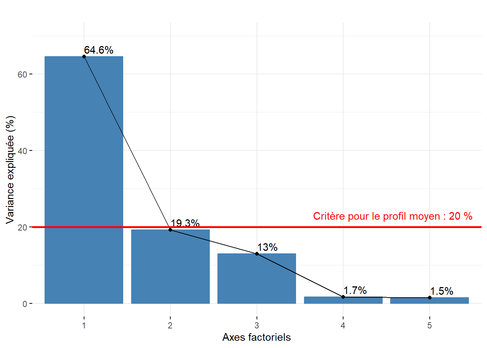
12.3.2.2 Résultats de l’AFC pour les variables et les individus
Comme pour l’ACP, nous retrouvons les trois mêmes mesures pour les variables et les individus : 1) les coordonnées factorielles, 2) les contributions et 3) les cosinus carrés.
Compréhension des axes factoriels de l’AFC : une étape essentielle, incontournable…
Comme en ACP, l’analyse des trois mesures (coordonnées, contributions et cosinus carrés) pour les variables et les individus doit vous permettre de comprendre la signification des axes factoriels retenus de l’AFC. Cette étape d’interprétation est essentielle afin de qualifier les variables latentes (axes factoriels, variables synthétiques) produites par l’AFC.
- Les coordonnées factorielles sont simplement les projections des points-lignes et des points-colonnes sur les axes de l’AFC. Tant pour les lignes que pour les colonnes, ces coordonnées bénéficient de deux propriétés intéressantes. Premièrement, pour chaque axe factoriel k, la somme du produit des marges des variables (\(f.j\), colonnes) ou des individus (\(fi.\), lignes) avec leurs coordonnées respectives (\(C^k_j\) et \(C^k_i\)) est égale à 0 (équation eq-CoordPropr1). Deuxièmement, pour chaque axe factoriel k, la somme des produits entre les marges (en ligne et en colonne) et les coordonnées au carré (en ligne et en colonne) est égale à la valeur propre de l’axe (équation eq-CoordPropr2).
\[ \sum{f.j (C^k_j)}= 0 \text{ et} \sum{fi. (C^k_i)}= 0 \tag{12.7}\]
\[ \sum{fi. (C^k_i)^2}= \mu_k \text{ et} \sum{f.j (C^k_j)^2}= \mu_k \tag{12.8}\]
En guise d’exemple, le tableau tbl-dataafcCoordVars2 permet de vérifier les deux propriétés des coordonnées pour les variables. Les sommes de \({f.j (C^k_j)}\) pour les axes 1 et 2 sont bien égales à 0; et les sommes de \({f.j (C^k_j)^2}\) pour les axes 1 et 2 sont bien égales aux valeurs propres de ces deux axes, soit 0,156 et 0,046 (comparez ces valeurs avec celles reportées au tableau tbl-dataafcValeurPropres plus haut).
| Modalité | f.j | 1 | 2 | 1 | 2 | 1 | 2 |
|---|---|---|---|---|---|---|---|
| VehCond | 0,499 | -0,329 | 0,077 | -0,164 | 0,038 | 0,054 | 0,003 |
| VehPass | 0,031 | -0,255 | 0,081 | -0,008 | 0,003 | 0,002 | 0,000 |
| TranspC | 0,345 | 0,208 | -0,229 | 0,072 | -0,079 | 0,015 | 0,018 |
| Apied | 0,081 | 0,813 | 0,545 | 0,066 | 0,044 | 0,053 | 0,024 |
| Velo | 0,036 | 0,938 | -0,187 | 0,033 | -0,007 | 0,031 | 0,001 |
| AutreMoyen | 0,009 | 0,142 | 0,078 | 0,001 | 0,001 | 0,000 | 0,000 |
| Somme | 1,000 | 0,000 | 0,000 | 0,156 | 0,046 |
Particularité de l’AFC
Contrairement à l’ACP, les coordonnées factorielles pour les variables en AFC ne sont pas les coefficients de corrélation de Pearson des variables sur les axes!
- Les contributions des colonnes ou des lignes en AFC permettent de repérer celles qui contribuent le plus à la formation des axes factoriels (de manière analogue à l’ACP). Pour un axe donné, leur sommation est égale à 100 %. Elles s’obtiennent en multipliant la coordonnée au carré avec la marge et en divisant le tout par la valeur propre de l’axe (équations eq-CtrAFCVar et eq-CtrAFCInd).
\[ \mbox{Ctr}_j^k =\frac{f.j(C^k_j)^2}{\mu_{k}}\times 100 \tag{12.9}\]
\[ \mbox{Ctr}_i^k =\frac{fi.(C^k_i)^2}{\mu_{k}}\times 100 \tag{12.10}\]
- Les cosinus carrés (Cos2) (appelés aussi les qualités de représentation sur un axe) permettent de repérer le ou les axes qui concourent le plus à donner un sens aux colonnes (variables) et aux lignes (individus), de manière analogue à l’ACP. Pour une variable ou un individu, la sommation des Cos2 pour tous les axes de l’AFC est aussi égale à 1.
Interprétation des résultats pour les colonnes (variables)
Maintenant, analysons ces trois statistiques pour les variables pour les deux premiers axes de l’AFC (tableau tbl-dataafcCoordVars et figure fig-afc1erplanfactVars).
Pour l’axe 1, résumant 65 % de la variance, trois modalités concourent à sa formation : VehCond (34,69 %), Apied (34,25 %) et Velo (20,13 %). À la lecture des coordonnées factorielles sur cet axe, les modes de transport relatifs aux véhicules motorisés (VehCond = -0,33 et VehPass = -0,25) s’opposent clairement aux modes actifs (Apied = 0,81 et Velo = 0,94), constat qu’il est possible de confirmer visuellement avec la figure fig-afc1erplanfactVars. La modalité VehCond a d’ailleurs la plus forte valeur de Cos2 sur cet axe (0,92), ce qui signale, sans l’ombre d’un doute, que l’axe 1 est celui qui donne le plus de sens à cette modalité.
Puisque l’axe 2 résume une partie beaucoup plus limitée de la variance du tableau (19,25 %), il n’est pas étonnant qu’un nombre plus limité de modalités concourent à sa formation : seules les contributions de la modalité Apied (51,68 %) et secondairement de TranspC (38,81 %) sont importantes. Leurs coordonnées factorielles s’opposent d’ailleurs sur cet axe (respectivement 0,81 et 0,21).
| Modalité | 1 | 2 | 1 | 2 | 1 | 2 |
|---|---|---|---|---|---|---|
| VehCond | -0,33 | 0,08 | 0,92 | 0,05 | 34,69 | 6,33 |
| VehPass | -0,25 | 0,08 | 0,34 | 0,03 | 1,28 | 0,44 |
| TranspC | 0,21 | -0,23 | 0,39 | 0,47 | 9,53 | 38,81 |
| Apied | 0,81 | 0,54 | 0,67 | 0,30 | 34,25 | 51,61 |
| Velo | 0,94 | -0,19 | 0,56 | 0,02 | 20,13 | 2,69 |
| AutreMoyen | 0,14 | 0,08 | 0,05 | 0,01 | 0,12 | 0,12 |
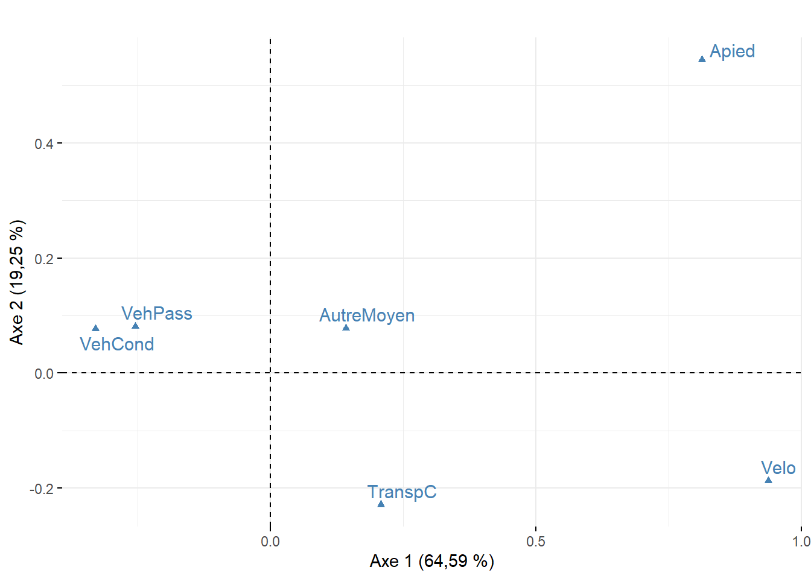
Interprétation des résultats pour les individus
Premier plan factoriel pour les variables et les individus
Lorsque le jeu de données comprend à la fois peu de modalités en ligne et en colonne, il est judicieux de les représenter simultanément sur le premier plan factoriel (axes 1 et 2). Pour ce faire, vous pouvez utiliser la fonction fviz_ca_biplot du package factoextra.
Étant donné que notre jeu de données comprend 521 secteurs de recensement, nous proposons ici de cartographier les coordonnées factorielles des individus pour les deux premiers axes de l’AFC (figure fig-afc1erplanfactInds2). Pour l’axe 1, les secteurs de recensement à l’est et l’ouest de l’île de Montréal présentent les coordonnées les plus fortement négatives (en rouge); dans ces zones, l’usage des véhicules motorisés pour des déplacements domicile-travail est certainement surreprésenté, comparativement aux modes actifs. À l’inverse, dans les secteurs de recensement du centre de l’île présentant de fortes valeurs positives (en rouge), le recours aux modes de transports actifs (marche et vélo) est bien plus important, toutes proportions gardées. Quant à la cartographie des coordonnées pour l’axe 2, elle permet surtout de repérer quelques secteurs de recensement autour du centre-ville (très fortes valeurs positives en vert foncé) où les déplacements domicile-travail à pied sont plus fréquents, toutes proportions gardées.
En résumé, suite à l’analyse des coordonnées factorielles des variables et des individus, nous pouvons conclure que le premier axe est certainement le plus intéressant puisqu’il permet d’opposer l’usage des modes de transports motorisés versus les modes de transports actifs pour les déplacements domicile-travail sur l’île de Montréal. Cette nouvelle variable synthétique (variable latente) pourrait ainsi être introduite dans des analyses subséquentes (par exemple, dans un modèle de régression). Cela démontre qu’au même titre que l’ACP, l’AFC est une méthode de réduction de données puisque nous sommes passés d’un tableau comprenant 512 secteurs de recensement et six modalités à un tableau comprenant une seule variable synthétique (axe 1).

Ajout de modalités supplémentaires dans une analyse des correspondances (AFC)
Comme pour l’ACP, il est possible d’ajouter des variables et des individus supplémentaires une fois l’AFC calculée. En guise d’illustration, nous avons ajouté à l’AFC précédemment analysée des modalités relatives à la durée des temps de déplacements : moins de 15 minutes, 15 à 29, 30 à 44, 45 à 59, 60 minutes et plus. Sans surprise, sur le premier plan factoriel à la figure fig-afc1erplanfactInds2, cette dernière modalité, représentant les trajets les plus longs, est la plus proche des modalités relatives à l’usage des véhicules motorisés (VehCond et VehPass).
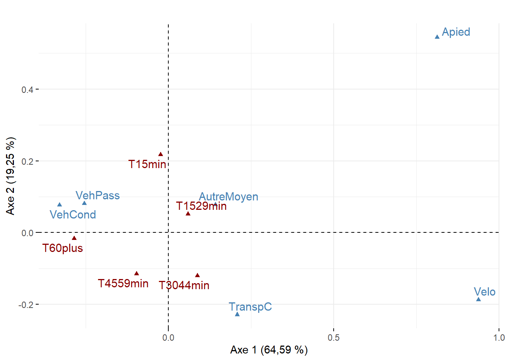
12.3.3 Mise en œuvre dans R
12.3.3.1 Calcul d’une AFC avec FactoMineR
Plusieurs packages permettent de calculer une AFC dans R, notamment ca (fonction ca), MASS (fonction corresp), ade4 (fonction dudi.coa) et FactoMineR (fonction CA). De nouveau, nous utilisons FactoMineR couplé au package factoextra pour réaliser rapidement des graphiques avec les résultats pour les variables et les coordonnées.
Pour calculer l’AFC, il suffit d’utiliser la fonction CA de FactoMineR, puis la fonction summary(res.afc), qui renvoie les résultats de l’AFC pour :
Les valeurs propres (section
Eigenvalues) pour les axes factoriels (Dim.1àDim.n) avec leur variance expliquée brute (Variance), en pourcentage (% of var.) et en pourcentage cumulé (Cumulative % of var.).Les dix premières observations (section
Rows) avec les coordonnées factorielles (Dim.1àDim.n), les contributions (ctr) et les cosinus carrés (cos2). Pour accéder aux résultats pour toutes les observations, utilisez les fonctionsres.afc$rowou encoreres.afc$row$coord(uniquement les coordonnées factorielles),res.afc$row$contrib(uniquement les contributions) etres.afc$row$cos2(uniquement les cosinus carrés).Les colonnes (section
Columns) avec les coordonnées factorielles (Dim.1àDim.n), les contributions (ctr) et les cosinus carrés (cos2).
# Chargement des packages
library(FactoMineR)
library(factoextra)
# Chargement des données
load("data/analysesfactorielles/DonneesAFC.Rdata")
# Avant de calculer l'AFC, il convient de vérifier si les deux variables
# qualitatives sont dépendantes avec le test du khi-deux
khideux <- chisq.test(dfDonneesAFC[,1:6])
print(khideux)
Pearson's Chi-squared test
data: dfDonneesAFC[, 1:6]
X-squared = 207129, df = 2600, p-value < 2.2e-16if(khideux$p.value <=0.05){
cat("La valeur de p < 0,05. Les variables sont dépendantes. Calculez l'AFC.")
}else {
cat("La valeur de p > 0,05. Les variables sont indépendantes. Inutile de calculer l'AFC")
}La valeur de p < 0,05. Les variables sont dépendantes. Calculez l'AFC.# Calcul de l'analyse des correspondances sur les six premières variables
res.afc <- CA(dfDonneesAFC[,1:6], graph = FALSE)
# Affichage des résultats de la fonction CA
print(res.afc)**Results of the Correspondence Analysis (CA)**
The row variable has 521 categories; the column variable has 6 categories
The chi square of independence between the two variables is equal to 207129.3 (p-value = 0 ).
*The results are available in the following objects:
name description
1 "$eig" "eigenvalues"
2 "$col" "results for the columns"
3 "$col$coord" "coord. for the columns"
4 "$col$cos2" "cos2 for the columns"
5 "$col$contrib" "contributions of the columns"
6 "$row" "results for the rows"
7 "$row$coord" "coord. for the rows"
8 "$row$cos2" "cos2 for the rows"
9 "$row$contrib" "contributions of the rows"
10 "$call" "summary called parameters"
11 "$call$marge.col" "weights of the columns"
12 "$call$marge.row" "weights of the rows" # Visualisation des marges en colonne
round(res.afc$call$marge.col,4) VehCond VehPass TranspC Apied Velo AutreMoyen
0.4986 0.0309 0.3449 0.0808 0.0357 0.0090 # Visualisation des marges en ligne. Étant donné que nous avons 521 individus,
# la ligne ci-dessous est en commentaire
# round(res.afc$call$marge.row,4)
# Sommaire des résultats de l'AFC
# Remarquez que la première ligne de ce sommaire est le résultat du khi-deux
summary(res.afc)
Call:
CA(X = dfDonneesAFC[, 1:6], graph = FALSE)
The chi square of independence between the two variables is equal to 207129.3 (p-value = 0 ).
Eigenvalues
Dim.1 Dim.2 Dim.3 Dim.4 Dim.5
Variance 0.156 0.046 0.031 0.004 0.004
% of var. 64.590 19.250 12.995 1.683 1.482
Cumulative % of var. 64.590 83.840 96.835 98.518 100.000
Rows (the 10 first)
Iner*1000 Dim.1 ctr cos2 Dim.2 ctr cos2 Dim.3
1 | 0.155 | -0.304 0.095 0.961 | -0.023 0.002 0.006 | 0.048
2 | 0.123 | -0.232 0.067 0.850 | 0.028 0.003 0.012 | -0.021
3 | 0.268 | -0.246 0.127 0.737 | -0.002 0.000 0.000 | -0.046
4 | 0.102 | -0.168 0.034 0.513 | -0.111 0.049 0.222 | -0.117
5 | 0.118 | -0.251 0.067 0.883 | 0.004 0.000 0.000 | -0.007
6 | 0.120 | -0.130 0.024 0.313 | -0.103 0.051 0.196 | -0.144
7 | 0.124 | -0.029 0.002 0.022 | -0.158 0.167 0.626 | -0.079
8 | 0.073 | -0.157 0.028 0.598 | -0.090 0.031 0.195 | -0.006
9 | 0.014 | -0.060 0.005 0.506 | -0.033 0.005 0.150 | -0.018
10 | 0.040 | 0.004 0.000 0.000 | -0.204 0.073 0.838 | 0.053
ctr cos2
1 0.012 0.024 |
2 0.003 0.007 |
3 0.022 0.026 |
4 0.080 0.246 |
5 0.000 0.001 |
6 0.146 0.380 |
7 0.061 0.155 |
8 0.000 0.001 |
9 0.002 0.048 |
10 0.007 0.056 |
Columns
Iner*1000 Dim.1 ctr cos2 Dim.2 ctr cos2 Dim.3
VehCond | 58.559 | -0.329 34.687 0.924 | 0.077 6.331 0.050 | 0.051
VehPass | 5.923 | -0.255 1.283 0.338 | 0.081 0.440 0.035 | 0.001
TranspC | 38.261 | 0.208 9.534 0.389 | -0.229 38.812 0.472 | -0.124
Apied | 79.193 | 0.813 34.252 0.675 | 0.545 51.610 0.303 | -0.147
Velo | 55.633 | 0.938 20.126 0.564 | -0.187 2.688 0.022 | 0.802
AutreMoyen | 3.969 | 0.142 0.117 0.046 | 0.078 0.119 0.014 | 0.070
ctr cos2
VehCond 4.141 0.022 |
VehPass 0.000 0.000 |
TranspC 16.995 0.139 |
Apied 5.543 0.022 |
Velo 73.180 0.413 |
AutreMoyen 0.140 0.011 |
12.3.3.2 Exploration graphique des résultats de l’AFC avec factoextra
Comme pour l’ACP, factoextra dispose de plusieurs fonctions très intéressantes pour construire rapidement des graphiques avec les résultats de l’AFC. Premièrement, la syntaxe ci-dessous (avec la fonction fviz_screeplot) renvoie deux graphiques pour analyser les résultats des valeurs propres de l’AFC (figure fig-factoextraAFC1).
library(factoextra)
library(ggplot2)
library(ggpubr)
# Nombre de modalités en ligne et en colonne
ModalitesLig <- nrow(dfDonneesAFC)
ModalitesCol <- ncol(dfDonneesAFC[,1:6])
# Critère statistique du profil moyen
critere2 <- round(1/(ModalitesCol-1)*100,2)
texte <- paste0("Critère pour le profil moyen : ", as.character(critere2), " %")
# Graphique avec les valeurs propres
G1 <- fviz_screeplot(res.afc, choice = "eigenvalue",
ylab = "Valeurs propres",
xlab = "Axes factoriels",
main="Valeurs propres")
G2 <- fviz_screeplot(res.afc, choice = "variance", addlabels = TRUE, ylim = c(0, 70),
ylab = "Variance expliquée (%)",
xlab = "Axes factoriels",
main="Valeurs propres (%)")+
geom_hline(yintercept=c2, linetype=1, color = "red", linewidth = 1)+
annotate(geom = "text", x = ModalitesCol-.5,
y = critere2+3, label=texte,
color = "red", hjust=1, linewidth = 4)Warning in annotate(geom = "text", x = ModalitesCol - 0.5, y = critere2 + :
Ignoring unknown parameters: `linewidth`ggarrange(G1, G2)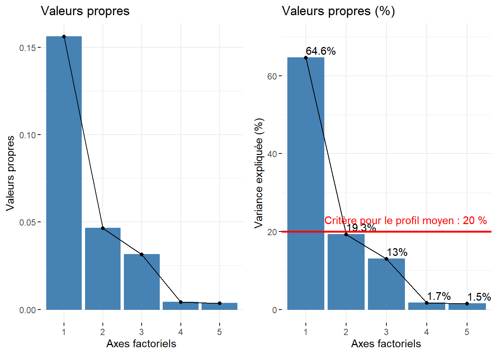
Avec les fonctions fviz_contrib et fviz_cos2, il est très facile de réaliser des histogrammes pour les contributions et les cosinus carrés pour les variables (colonnes) ou les individus (lignes), et ce, avec le paramètre choice = c("row", "col") (figure fig-acp1erplanfactVars2a).
library(factoextra)
library(ggplot2)
library(ggpubr)
VP1pct <- round(res.afc$eig[1,2],2)
VP2pct <- round(res.afc$eig[2,2],2)
G1 <- fviz_contrib (res.afc, choice = "col", axes = 1, title = "Axe 1")
G2 <- fviz_contrib (res.afc, choice = "col", axes = 2, title = "Axe 2")
ggarrange(G1, G2, ncol = 2, nrow = 1)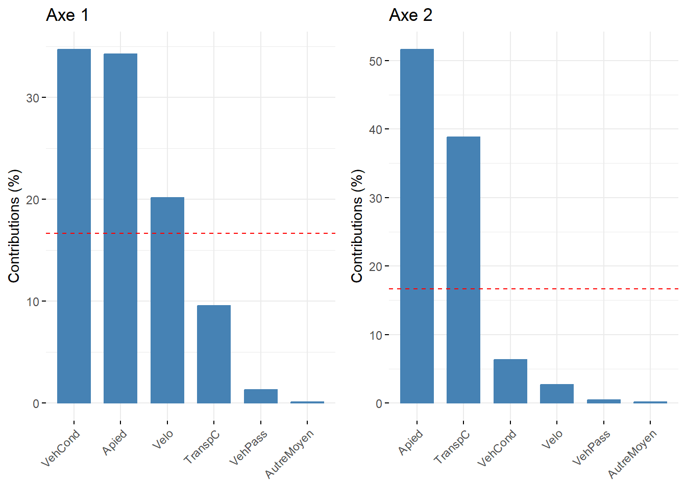
Quant aux fonctions fviz_ca_col et fviz_ca_row, elles permettent rapidement de construire le premier plan factoriel pour les colonnes (variables) et les lignes (individus) (figure fig-afc1erplanfactVars2b). Aussi, la fonction fviz_ca_biplot permet de construire un plan factoriel, mais avec les lignes et les colonnes simultanément.
G3 <- fviz_ca_col(res.afc,
repel = TRUE,
geom = c("text" , "point"),
col.col = "steelblue",
title = "Mode de transport",
xlab = paste0("Axe 1 (", VP1pct, " %)"),
ylab = paste0("Axe 2 (", VP2pct, " %)"))
G4 <- fviz_ca_row(res.afc,
repel = TRUE,
geom = c("point"),
col.row = "steelblue",
title = "Secteurs de recensement",
xlab = paste0("Axe 1 (", VP1pct, " %)"),
ylab = paste0("Axe 2 (", VP2pct, " %)"))
ggarrange(G3, G4, ncol = 2, nrow = 1)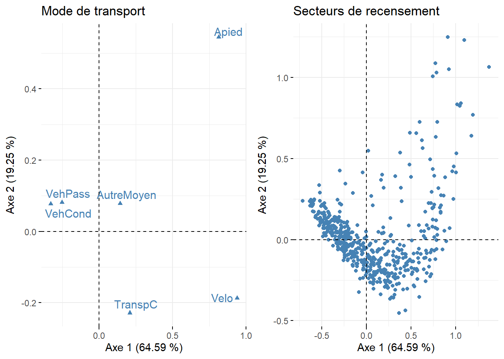
La syntaxe ci-dessous permet d’ajouter des modalités supplémentaires dans l’AFC et de constuire le graphique du premier plan factoriel (figure fig-afcAjoutModalites2).
# Les colonnes 7 à 11 sont mises comme des variables supplémentaires dans l'AFC
res.afc2 <- CA(dfDonneesAFC, col.sup = 7:11, graph = FALSE)
VP1pct <- round(res.afc2$eig[1,2],2)
VP2pct <- round(res.afc2$eig[2,2],2)
fviz_ca_col(res.afc2,
repel = TRUE,
geom= c("text" , "point"),
col.col = "steelblue",
title = "",
xlab=paste0("Axe 1 (", VP1pct, " %)"),
ylab=paste0("Axe 2 (", VP2pct, " %)"))Finalement, la syntaxe ci-dessous permet de cartographier les coordonnées factorielles des individus de l’AFC avec le package tmap (figure fig-afc1erplanfactInds2B).
library(tmap)
library(stringr)
dfAFCInd <- data.frame(Coord = res.afc$row$coord,
Cos2 = res.afc$row$cos2,
Ctr = res.afc$row$contrib)
names(dfAFCInd) <- str_replace(names(dfAFCInd), ".Dim.", "Comp")
CartoAFC <- cbind(sfDonneesAFC, dfAFCInd)
VP1pct <- tofr(round(res.afc$eig[1,2],2))
VP2pct <- tofr(round(res.afc$eig[2,2],2))
Carte1 <- tm_shape(CartoAFC) +
tm_fill(col = "CoordComp1", style = "cont", midpoint = 0, title = "Coordonnées")+
tm_layout(title = paste0("Axe 1 (", VP1pct,"%)"), attr.outside = TRUE, frame = FALSE)
Carte2 <- tm_shape(CartoAFC) +
tm_fill(col = "CoordComp2", style = "cont", midpoint = 0, title = "Coordonnées")+
tm_layout(title = paste0("Axe 2 (", VP2pct,"%)"), attr.outside = TRUE, frame = FALSE)
tmap_arrange(Carte1, Carte2, nrow = 1)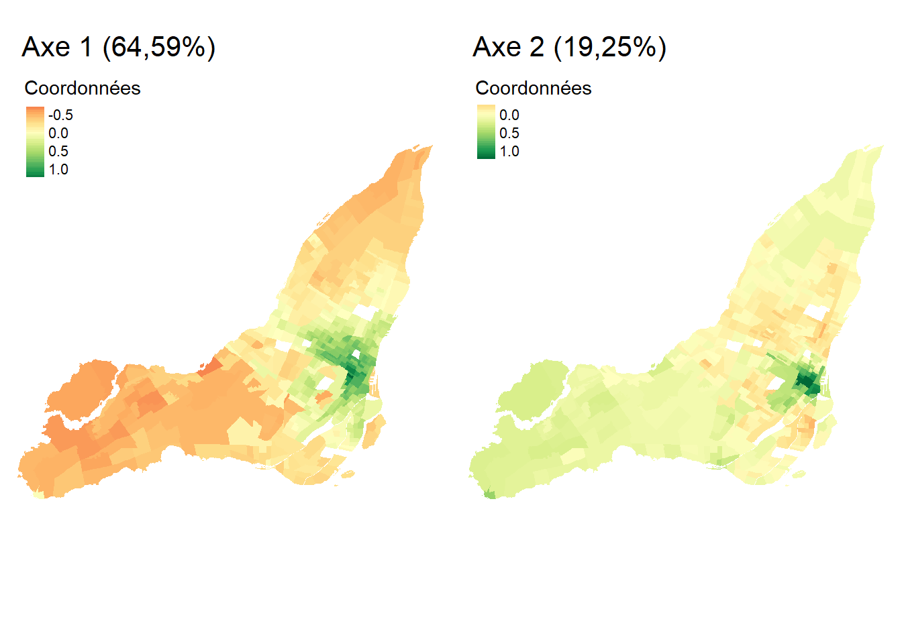
12.4 Analyse de correspondances multiples (ACM)
L’analyse des correspondances multiples (ACM) est particulièrement adaptée à l’exploration de données issues d’une enquête par sondage, puisqu’elle permet de résumer/synthétiser l’information d’un tableau comprenant uniquement des variables qualitatives (figure fig-AnalysesFactoriellesTabACM).
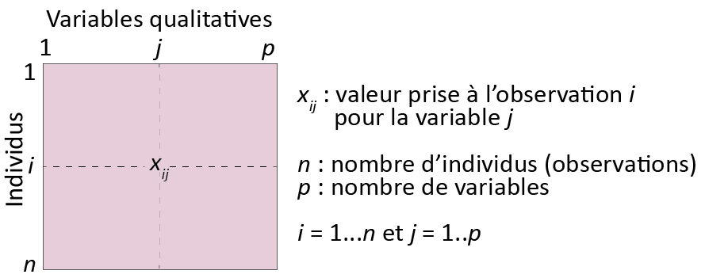
Par exemple, une enquête sur la mobilité d’une population donnée pourrait comprendre plusieurs variables qualitatives, dont celles reportées au tableau tbl-ACM1.
| Modalités des variables | Codage |
|---|---|
| Sexe | |
| Homme | 1 |
| Femme | 2 |
| Groupe d'âge | |
| Moins de 20 ans | 1 |
| 20 à 39 ans | 2 |
| 40 à 59 ans | 3 |
| 60 ans et plus | 4 |
| Mode de transport | |
| Automobile | 1 |
| Transport en commun | 2 |
| Marche | 3 |
| Vélo | 4 |
Pour analyser de telles données, il suffit de transformer le tableau condensé (de données brutes) en un tableau disjonctif complet dans lequel chaque modalité des variables qualitatives devient une variable binaire prenant les valeurs de 0 ou 1 (tableaux tbl-ACM2 et tbl-ACM3). Notez que la somme de chaque ligne est alors égale au nombre de variables qualitatives.
| Sexe | Groupe d’âge | Mode de transport | |
|---|---|---|---|
| Ind. 1 | 1 | 1 | 2 |
| Ind. 2 | 1 | 2 | 3 |
| Ind. 3 | 2 | 3 | 1 |
| Ind. 4 | 1 | 2 | 1 |
| Ind. 5 | 2 | 4 | 2 |
| Ind. 6 | 1 | 4 | 4 |
| Individu | Homme | Femme | Moins de 20 ans | 20 à 39 ans | 40 à 59 ans | 60 ans et plus | Auto. | T.C. | Marche | Vélo |
|---|---|---|---|---|---|---|---|---|---|---|
| Ind. 1 | 1 | 0 | 1 | 0 | 0 | 0 | 0 | 1 | 0 | 0 |
| Ind. 2 | 1 | 0 | 0 | 1 | 0 | 0 | 0 | 0 | 1 | 0 |
| Ind. 3 | 0 | 1 | 0 | 0 | 1 | 0 | 1 | 0 | 0 | 0 |
| Ind. 4 | 1 | 0 | 0 | 1 | 0 | 0 | 1 | 0 | 0 | 0 |
| Ind. 5 | 0 | 1 | 0 | 0 | 0 | 1 | 0 | 1 | 0 | 0 |
| Ind. 6 | 1 | 0 | 0 | 0 | 0 | 1 | 0 | 0 | 0 | 1 |
ACM versus AFC
Nous avons vu que l’AFC permet d’analyser un tableau de contingence avec deux variables qualitatives. En ACM, les colonnes sont les différentes modalités des variables qualitatives et les lignes sont les observations (par exemple, les individus ayant répondu à une enquête). En résumé, l’analyse des correspondances multiples (ACM) est simplement une analyse des correspondances (AFC) appliquée sur un tableau disjonctif complet.
L’ACM permet ainsi de révéler les ressemblances entre les différentes modalités des variables qualitatives et les ressemblances entre les différents individus. Par conséquent, elle produit également des variables synthétiques (axes factoriels) résumant l’information contenue dans le tableau initial. L’évaluation de ces ressemblances et la détermination des axes factoriels sont aussi basées sur la distance du khi-deux.
12.4.1 Aides à l’interprétation
Puisque l’ACM est une extension de l’AFC, nous retrouvons les mêmes aides à l’interprétation : les valeurs propres pour les axes, les coordonnées factorielles, les contributions et les cosinus carrés pour les variables et les individus.
Pour présenter l’ACM, nous utilisons des données ouvertes de la Ville de Montréal et, plus particulièrement, celles d’un sondage auprès de la population de l’île de Montréal sur l’agriculture urbaine. Pour ce faire, nous avons conservé uniquement les personnes pratiquant l’agriculture urbaine (n = 352). Les variables qualitatives extraites pour l’ACM sont reportées au tableau tbl-dataACM) avec la description des questions, leurs modalités respectives avec les effectifs bruts et en pourcentage. Au final, l’ACM est calculée de la manière suivante :
Neuf variables qualitatives relatives à la pratique de l’agriculture urbaine sont retenues (
q3,q4,q5,q8,q9,q10,q11,q12etq13).Quatre variables relatives au profil socioéconomique des personnes répondantes sont introduites comme variables supplémentaires (
q15,q16,q17etq21).Chaque ligne est pondérée avec la variable
pond.
L’objectif de cette ACM est double :
Montrer les ressemblances entre les différentes modalités relatives à la pratique de l’agriculture urbaine. L’analyse des axes factoriels devrait nous permettre d’identifier différents profils des personnes pratiquant l’agriculture urbaine.
Projeter les modalités des variables socioéconomiques afin de vérifier si elles sont ou non associées aux axes factoriels, c’est-à-dire aux différents profils révélés par les axes.
Bloc attention
L’analyse du sondage sur l’agriculture urbaine réalisée ici est purement exploratoire : elle vise uniquement à démontrer que l’ACM est un outil particulièrement intéressant pour analyser les données d’un sondage. Par contre, cette analyse n’a aucune prétention scientifique puisque nous ne sommes pas des spécialistes de l’agriculture urbaine. Dans ce champ de recherche très fertile qu’est l’agriculture urbaine (surement pas la meilleure blague du livre…), vous pourrez consulter plusieurs études montréalaises (McClintock 2018; Audate, Cloutier et Lebel 2021; Bhatt et Farah 2016).
| Modalité | N | % |
|---|---|---|
| Q3. Depuis combien de temps cultivez-vous des fruits, des fines herbes ou des légumes? | ||
| Q3. Moins de 1 an | 35 | 9,9 |
| Q3. De 1 à 4 ans | 101 | 28,7 |
| Q3. De 5 à 9 ans | 66 | 18,8 |
| Q3. 10 ans ou plus | 150 | 42,6 |
| Q4. Selon vous, quelle proportion des fruits, des fines herbes et des légumes que vous consommez durant l'été provient de votre propre production? | ||
| Q4. Moins de 10% | 192 | 54,5 |
| Q4. 10 à 25% | 70 | 19,9 |
| Q4. 26 à 50% | 47 | 13,4 |
| Q4. Plus de 50% | 43 | 12,2 |
| Q5. Utilisez-vous du compost provenant de vos déchets verts ou alimentaires pour faire pousser des fruits, des fines herbes ou des légumes? | ||
| Q5. Oui | 90 | 25,6 |
| Q5. Non | 262 | 74,4 |
| Q8. Récupérez-vous l'eau de pluie pour irriguer vos cultures de fruits, de fines herbes ou des légumes ou encore votre jardin? | ||
| Q8. Oui | 72 | 20,5 |
| Q8. Non | 280 | 79,5 |
| Q9. Combien de sortes de fruits, de fines herbes ou de légumes cultivez-vous? | ||
| Q9. Moins de 5 sortes | 170 | 48,3 |
| Q9. 5 à 9 sortes | 124 | 35,2 |
| Q9. 10 à 14 sortes | 42 | 11,9 |
| Q9. 15 sortes ou plus | 16 | 4,5 |
| Q10. Cultivez-vous suffisamment de fruits, de fines herbes ou de légumes pour partager avec d'autres personnes? | ||
| Q10. Oui | 143 | 40,6 |
| Q10. Non | 209 | 59,4 |
| Q11. Échangez-vous vos semis ou vos récoltes de fruits, de fines herbes ou de légumes avec d'autres personnes? | ||
| Q11. Oui | 90 | 25,6 |
| Q11. Non | 262 | 74,4 |
| Q12. Selon vous, l'agriculture urbaine contribue-t-elle à améliorer les rapports entre les gens? | ||
| Q12. Oui | 283 | 80,4 |
| Q12. Non | 46 | 13,1 |
| Q12. NSP/NRP | 23 | 6,5 |
| Q13. Saviez-vous que la Ville de Montréal encourage et soutient l'agriculture urbaine sur l'île de Montréal? | ||
| Q13. Oui | 203 | 57,7 |
| Q13. Non | 149 | 42,3 |
| Q15. À quel groupe d'âge appartenez-vous? | ||
| Q15. 18 à 34 ans | 54 | 15,3 |
| Q15. 35 à 49 ans | 110 | 31,2 |
| Q15. 50 à 64 ans | 101 | 28,7 |
| Q15. 65 ans et plus | 87 | 24,7 |
| Q16. Quelle est votre occupation principale? | ||
| Q16. Travail temps plein | 177 | 50,3 |
| Q16. Travail. temps partiel | 26 | 7,4 |
| Q16. Étudiant | 14 | 4,0 |
| Q16. Retraité | 101 | 28,7 |
| Q16. Sans emploi | 10 | 2,8 |
| Q16. À la maison | 24 | 6,8 |
| Q17. Quel est le plus haut niveau de scolarité que vous avez complété? | ||
| Q17. Aucun certificat ou dipl. | 25 | 7,1 |
| Q17. Dipl. secondaires | 80 | 22,7 |
| Q17. Dipl. collégiales | 75 | 21,3 |
| Q17. Études universitaires | 172 | 48,9 |
| Q21. Êtes-vous propriétaire ou locataire de votre résidence ? | ||
| Q21. Propriétaire | 250 | 71,0 |
| Q22. Locataire | 102 | 29,0 |
12.4.1.1 Résultats de l’ACM pour les valeurs propres
Les résultats pour les valeurs propres sont reportés au tableau tbl-ACMValeursPropresTab et à la figure fig-ACMValeursPropresFig. En ACM, l’inertie totale du tableau des variables qualitatives est égale au nombre moyen de modalités par variable moins un, soit \(\frac{K}{J}-1\) avec K et J étant respectivement les nombres de modalités et de variables. Aussi, le nombre d’axes produits par l’ACM est égal à \(K - J\). Pour notre tableau, l’inertie est donc égale à \(\mbox{25} / \mbox{9} = \mbox{1,77}\) avec \(\mbox{25}-\mbox{9} = \mbox{16}\) axes. Le nombre d’axes à retenir est souvent plus difficile à déterminer puisque, tel que signalé judicieusement par Jérôme Pagès (2002, 53) : « en pratique, comparée à l’ACP, l’ACM conduit, dans l’ensemble à : des pourcentages d’inertie plus petits; une décroissance de ces pourcentages plus douce ».
L’histogramme des valeurs propres (figure fig-ACMValeursPropresFig) révèle plusieurs sauts importants dans les valeurs propres qui pourraient justifier le choix du nombre d’axes factoriels, soit aux axes 1, 2, 3 et 6. Pour l’exercice, nous retenons les trois premiers axes qui résument 30 % de l’inertie du tableau initial.
| Axe factoriel | Valeur propre | Pourcentage | Pourc. cumulé | |
|---|---|---|---|---|
| dim 1 | 1 | 0,248 | 13,940 | 13,940 |
| dim 2 | 2 | 0,156 | 8,792 | 22,732 |
| dim 3 | 3 | 0,135 | 7,620 | 30,352 |
| dim 4 | 4 | 0,127 | 7,161 | 37,513 |
| dim 5 | 5 | 0,126 | 7,065 | 44,579 |
| dim 6 | 6 | 0,123 | 6,916 | 51,494 |
| dim 7 | 7 | 0,114 | 6,385 | 57,879 |
| dim 8 | 8 | 0,107 | 6,003 | 63,882 |
| dim 9 | 9 | 0,101 | 5,671 | 69,553 |
| dim 10 | 10 | 0,095 | 5,327 | 74,880 |
| dim 11 | 11 | 0,093 | 5,234 | 80,115 |
| dim 12 | 12 | 0,086 | 4,822 | 84,937 |
| dim 13 | 13 | 0,077 | 4,340 | 89,277 |
| dim 14 | 14 | 0,071 | 4,011 | 93,288 |
| dim 15 | 15 | 0,064 | 3,619 | 96,906 |
| dim 16 | 16 | 0,055 | 3,094 | 100,000 |
Warning: Using `size` aesthetic for lines was deprecated in ggplot2 3.4.0.
ℹ Please use `linewidth` instead.12.4.1.2 Résultats de l’ACM pour les modalités des variables
À titre de rappel, comme pour l’ACP et l’AFC, nous retrouvons les trois mêmes mesures pour les variables et les individus (coordonnées factorielles, contributions et cosinus carrés). Plus les variables qualitatives du jeu de données comprennent de modalités, plus la taille du tableau des résultats des modalités est importante et plus il est fastidieux de l’analyser. Il est donc recommandé de construire des histogrammes avec les coordonnées factorielles et les contributions des modalités, mais aussi un nuage de points avec les coordonnées des modalités des variables qualitatives sur le premier, voire le deuxième plan factoriel.
Compréhension des axes factoriels de l’ACM : une étape essentielle, incontournable…
Comme en ACP et en AFC, l’analyse des trois mesures (coordonnées, contributions et cosinus carrés) pour les variables et les individus doit vous permettre de comprendre la signification des axes factoriels retenus de l’ACM. Prenez le temps de bien réaliser cette étape d’interprétation souvent plus fastidieuse qu’en ACP et ACM, en raison du nombre élevé de modalités. Cette étape est en effet essentielle afin de qualifier les variables latentes (axes factoriels, variables synthétiques) produites par l’ACM.
Les résultats pour les variables sont reportés 1) au tableau tbl-ACMValeursCoordTab, 2) aux figures fig-ACMValeursCoordFig1, fig-ACMValeursCoordFig2 et fig-ACMValeursCoordFig3 pour les coordonnées et les contributions et à la fig-ACMValeursPlanFacto1 pour le premier plan factoriel.
Interprétation des résultats de l’axe 1 pour les variables
Sept modalités concourent le plus à la formation de l’axe 1 résumant 13,9 % de la variance : Q9. 10 à 14 sortes (10,35 %), Q10. Oui (9,99 %), Q9. Moins de 5 sortes (9,71 %), Q5. Oui (9,19 %), Q11. Oui (8,20 %), Q4. Moins de 10% (7,87 %) et Q10. Non (7,10 %). Aussi, les modalités suivantes sont aux deux extrémités de cet axe :
-
Coordonnées négatives :
Q12. Non(-0,84),Q3. Moins de 1 an(-0,73),Q9. Moins de 5 sortes(-0,67),Q4. Moins de 10%(-0,56),Q10. Non(-0,521). Cela signifie que lorsque les coordonnées des individus sont fortement négatives sur cet axe, les personnes pratiquant l’agriculture urbaine :-
ne pensent pas que l’agriculture urbaine contribue à améliorer les rapports entre les gens (
Q12); -
cultivent des fruits, des fines herbes ou de légumes depuis moins d’un an (
Q3); -
cultivent moins de cinq sortes de fruits, de fines herbes ou de légumes (
Q9); -
moins de 10 % de la proportion des fruits, des fines herbes et des légumes consommés durant l’été provient de leur propre production (
Q4); -
ne cultivent pas suffisamment pour partager avec d’autres personnes (
Q10).
-
ne pensent pas que l’agriculture urbaine contribue à améliorer les rapports entre les gens (
-
Coordonnées positives :
Q9. 15 sortes ou plus(1,36),Q9. 10 à 14 sortes(1,28),Q5. Oui(0,95) etQ11. Oui(0,85). Cela signifie que lorsque les coordonnées des individus sont fortement positives sur cet axe, les personnes pratiquant l’agriculture urbaine :-
cultivent plus de dix sortes de fruits, de fines herbes ou de légumes (
Q9); -
utilisent du compost provenant de leurs déchets verts ou de leurs déchets alimentaires pour faire pousser des fruits, des fines herbes ou de légumes (
Q5); -
échangent leurs semis ou leurs récoltes de fruits, de fines herbes ou des légumes avec d’autres personnes (
Q11).
-
cultivent plus de dix sortes de fruits, de fines herbes ou de légumes (
En résumé, l’axe 1 oppose clairement les néophytes en agriculture versus les personnes expérimentées cultivant des fruits et de légumes variés avec leur propre compost et échangeant leurs semis ou leurs récoltes.
| Modalité | 1 | 2 | 3 | 1 | 2 | 3 | 1 | 2 | 3 |
|---|---|---|---|---|---|---|---|---|---|
| Q3. Moins de 1 an | -0,73 | 0,68 | 0,63 | 2,70 | 3,68 | 3,64 | 0,07 | 0,06 | 0,05 |
| Q3. De 1 à 4 ans | -0,29 | -0,79 | 0,39 | 1,26 | 15,30 | 4,30 | 0,04 | 0,33 | 0,08 |
| Q3. De 5 à 9 ans | 0,12 | 0,38 | -1,11 | 0,12 | 2,02 | 19,43 | 0,00 | 0,04 | 0,29 |
| Q3. 10 ans ou plus | 0,45 | 0,35 | 0,02 | 3,19 | 3,01 | 0,02 | 0,11 | 0,07 | 0,00 |
| Q4. Moins de 10% | -0,56 | 0,03 | 0,07 | 7,87 | 0,04 | 0,22 | 0,40 | 0,00 | 0,01 |
| Q4. 10 à 25% | 0,74 | -0,76 | -0,11 | 4,92 | 8,22 | 0,19 | 0,14 | 0,14 | 0,00 |
| Q4. 26 à 50% | 0,78 | 0,64 | 0,15 | 3,82 | 4,18 | 0,28 | 0,10 | 0,07 | 0,00 |
| Q4. Plus de 50% | 0,53 | 0,40 | -0,37 | 1,31 | 1,17 | 1,19 | 0,03 | 0,02 | 0,02 |
| Q5. Oui | 0,95 | 0,56 | -0,13 | 9,19 | 5,01 | 0,29 | 0,27 | 0,09 | 0,00 |
| Q5. Non | -0,28 | -0,16 | 0,04 | 2,70 | 1,47 | 0,09 | 0,27 | 0,09 | 0,00 |
| Q8. Oui | 0,55 | 0,37 | 1,21 | 2,58 | 1,86 | 23,31 | 0,07 | 0,03 | 0,35 |
| Q8. Non | -0,13 | -0,09 | -0,29 | 0,62 | 0,45 | 5,60 | 0,07 | 0,03 | 0,35 |
| Q9. Moins de 5 sortes | -0,67 | 0,01 | 0,47 | 9,71 | 0,00 | 8,83 | 0,42 | 0,00 | 0,21 |
| Q9. 5 à 9 sortes | 0,24 | 0,11 | -0,79 | 0,89 | 0,30 | 17,31 | 0,03 | 0,01 | 0,32 |
| Q9. 10 à 14 sortes | 1,28 | -0,97 | 0,07 | 10,35 | 9,42 | 0,06 | 0,27 | 0,15 | 0,00 |
| Q9. 15 sortes ou plus | 1,36 | 2,15 | 0,65 | 3,62 | 14,42 | 1,50 | 0,08 | 0,21 | 0,02 |
| Q10. Oui | 0,73 | -0,15 | 0,07 | 9,99 | 0,63 | 0,18 | 0,38 | 0,02 | 0,00 |
| Q10. Non | -0,52 | 0,10 | -0,05 | 7,10 | 0,45 | 0,13 | 0,38 | 0,02 | 0,00 |
| Q11. Oui | 0,85 | -0,83 | 0,32 | 8,20 | 12,45 | 2,11 | 0,25 | 0,23 | 0,03 |
| Q11. Non | -0,29 | 0,28 | -0,11 | 2,79 | 4,24 | 0,72 | 0,25 | 0,23 | 0,03 |
| Q12. Oui | 0,16 | 0,02 | 0,01 | 0,97 | 0,02 | 0,01 | 0,11 | 0,00 | 0,00 |
| Q12. Non | -0,84 | -0,38 | 0,09 | 4,12 | 1,32 | 0,08 | 0,11 | 0,02 | 0,00 |
| Q12. NSP/NRP | -0,36 | 0,56 | -0,31 | 0,36 | 1,39 | 0,48 | 0,01 | 0,02 | 0,01 |
| Q13. Oui | 0,17 | 0,31 | 0,31 | 0,70 | 3,91 | 4,37 | 0,04 | 0,13 | 0,12 |
| Q13. Non | -0,22 | -0,40 | -0,40 | 0,91 | 5,05 | 5,66 | 0,04 | 0,13 | 0,12 |
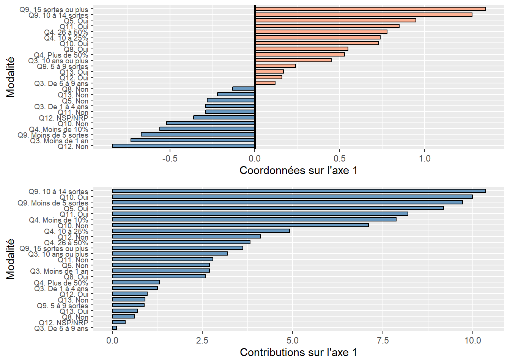
Interprétation des résultats de l’axe 2 pour les variables
Quatre modalités concourent le plus à la formation de l’axe 2 résumant 8,8 % de la variance : Q3. De 1 à 4 ans (15,30 %), Q9. 15 sortes ou plus (14,42 %), Q11. Oui (12,45 %) et Q9. 10 à 14 sortes (9,42 %). Les modalités suivantes sont présentes aux deux extrémités de l’axe 2 :
-
Coordonnées négatives :
Q9. 10 à 14 sortes(-0,97),Q11. Oui(-0,83),Q3. De 1 à 4 ans(-0,79),Q4. 10 à 25%(-0,76). Cela signifie que lorsque les coordonnées des individus sont fortement négatives sur cet axe, les personnes pratiquant l’agriculture urbaine :-
cultivent de 10 à 14 sortes de fruits, de fines herbes ou de légumes (
Q9); -
échangent leurs semis ou leurs récoltes de fruits, de fines herbes ou de légumes avec d’autres personnes (
Q11); -
cultivent des fruits, des fines herbes ou des légumes depuis 1 à 4 ans (
Q3); -
de 10 à 25 % de la proportion des fruits, des fines herbes et des légumes consommés durant l’été provient de leur propre production (
Q4).
-
cultivent de 10 à 14 sortes de fruits, de fines herbes ou de légumes (
-
Coordonnées positives : seule la modalité
Q9. 15 sortes ou plus(2,15) présente une forte coordonnée positive.
En résumé, l’axe 2 permet surtout d’identifier des personnes pratiquant l’agriculture urbaine depuis quelques années (de 1 à 4 ans), mais cultivant déjà de nombreuses sortes de fruits et légumes et partageant aussi leurs semis ou récoltes.
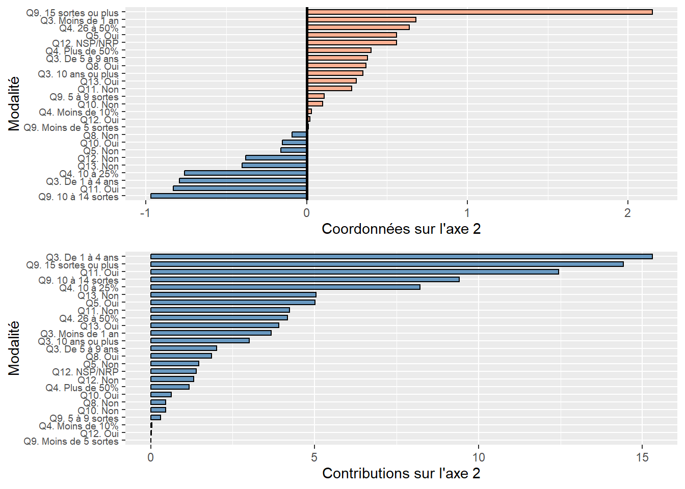
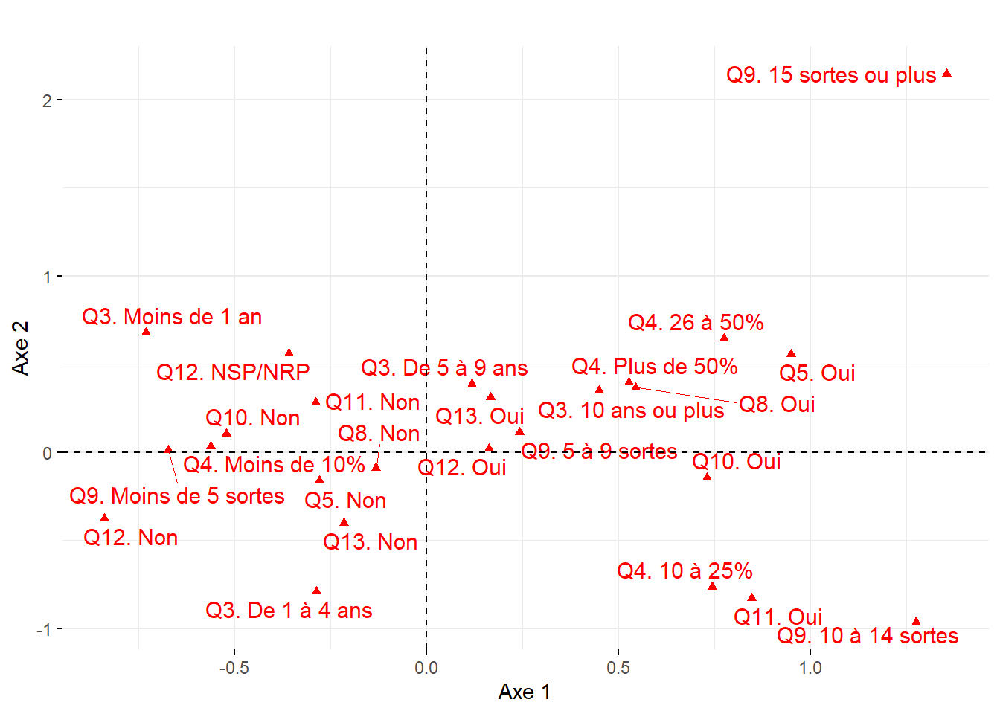
Interprétation des résultats de l’axe 3 pour les variables
Trois modalités concourent le plus à la formation de l’axe 3 résumant 7,6 % de la variance : Q8. Oui (23,31), Q3. De 5 à 9 ans (19,43) et Q9. 5 à 9 sortes (17,31). Les modalités suivantes sont présentes aux deux extrémités de l’axe 3 :
-
Coordonnées négatives :
Q3. De 5 à 9 ans(-1,11),Q9. 5 à 9 sortes(-0,79). -
Coordonnées positives : seule la modalité
Q8. Ouiprésente une coordonnée fortement positive (1,21).
Par conséquent, cet axe semble plus complexe à analyser et surtout moins intéressant que les deux premiers.
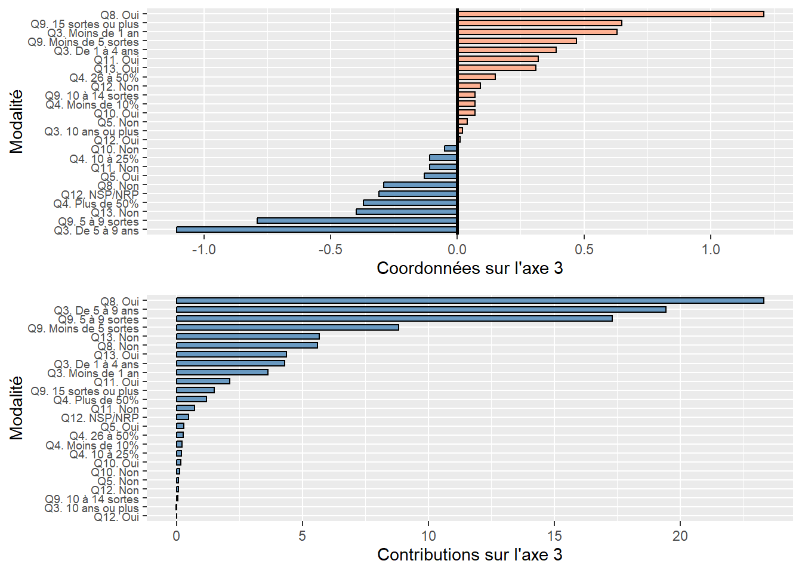
Analyse des variables supplémentaires dans l’ACM
Il est ensuite possible de projeter les modalités supplémentaires sur les axes de l’ACM retenus (tableau tbl-ACMValeursCoordSuppl et figure fig-ACMValeursPlanFactoSupp1). Les faibles valeurs des coordonnées factorielles des modalités supplémentaires sur les deux axes semblent indiquer que le profil socioéconomique des personnes pratiquant l’agriculture urbaine ne semble pas (ou peu) relié aux profils identifiés par les axes factoriels.
| Modalité | 1 | 2 | 1 | 2 |
|---|---|---|---|---|
| Q15. 18 à 34 ans | -0,09 | -0,27 | 0,00 | 0,04 |
| Q15. 35 à 49 ans | -0,06 | -0,01 | 0,00 | 0,00 |
| Q15. 50 à 64 ans | 0,14 | 0,25 | 0,01 | 0,02 |
| Q15. 65 ans et plus | 0,11 | 0,25 | 0,00 | 0,01 |
| Q16. Travail temps plein | -0,10 | -0,06 | 0,01 | 0,01 |
| Q16. Travail. temps partiel | 0,36 | -0,15 | 0,01 | 0,00 |
| Q16. Étudiant | -0,14 | -0,11 | 0,00 | 0,00 |
| Q16. Retraité | 0,17 | 0,25 | 0,01 | 0,02 |
| Q16. Sans emploi | 0,44 | -0,14 | 0,01 | 0,00 |
| Q16. À la maison | -0,06 | 0,18 | 0,00 | 0,00 |
| Q17. Aucun certificat ou dipl. | 0,28 | 0,16 | 0,00 | 0,00 |
| Q17. Dipl. secondaires | -0,09 | 0,01 | 0,00 | 0,00 |
| Q17. Dipl. collégiales | 0,01 | 0,19 | 0,00 | 0,01 |
| Q17. Études universitaires | 0,00 | -0,10 | 0,00 | 0,01 |
| Q21. Propriétaire | 0,03 | 0,02 | 0,00 | 0,00 |
| Q22. Locataire | -0,06 | -0,03 | 0,00 | 0,00 |
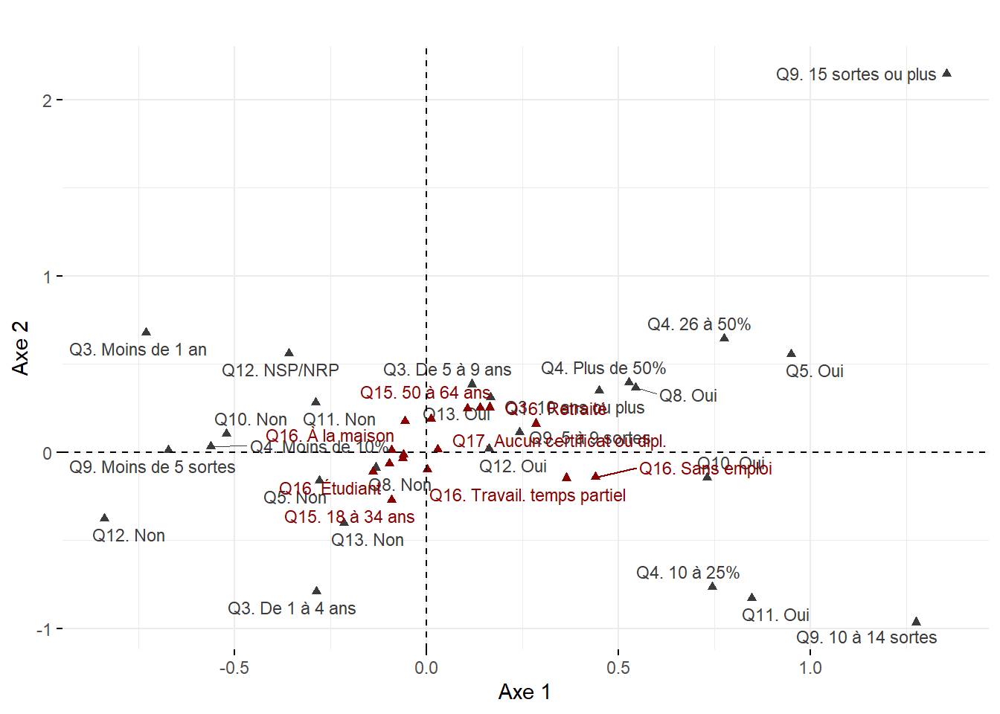
Visualisation de variables qualitatives ordinales sur un plan factoriel
Lorsque les variables qualitatives sont ordinales et non nominales, il peut être intéressant de relier les différentes modalités avec une ligne. Cela permet de comprendre en un coup d’œil la trajectoire que suivent les modalités sur les deux axes factoriels. En guise d’exemple, nous réalisons cet exercice pour les variables Q3 et Q9 (figure fig-ACMordinaleTrajectoire).
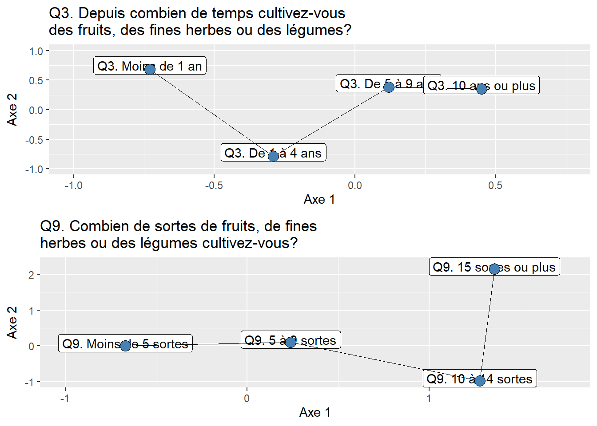
12.4.1.3 Résultats de l’ACM pour les individus
Comme toute méthode factorielle, les coordonnées factorielles, les cosinus carrés et les contributions sont aussi disponibles pour les individus en ACM. Nous proposons ici simplement de réaliser le premier plan factoriel pour les individus en attribuant un dégradé de couleurs avec les cosinus carrés (figure fig-ACMPlanFacto12Ind1). Il est aussi possible d’attribuer des couleurs aux différentes modalités d’une variable. Par exemple, sur le premier plan factoriel, nous avons utilisé la variable Q12. Selon vous, l’agriculture urbaine contribue-t-elle à améliorer les rapports entre les gens?. Cela permet de repérer visuellement que les personnes ayant répondu négativement à cette question ont surtout des coordonnées négatives sur l’axe 1.
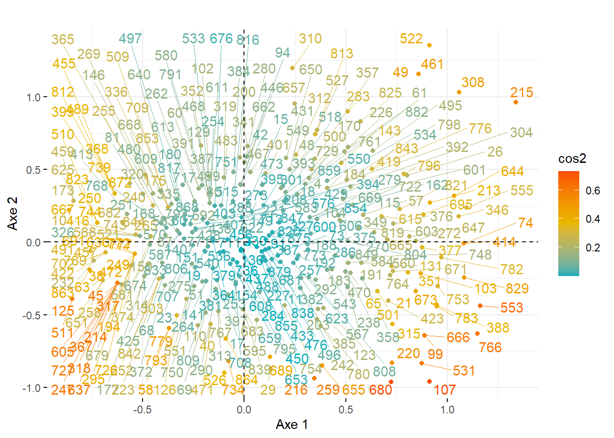
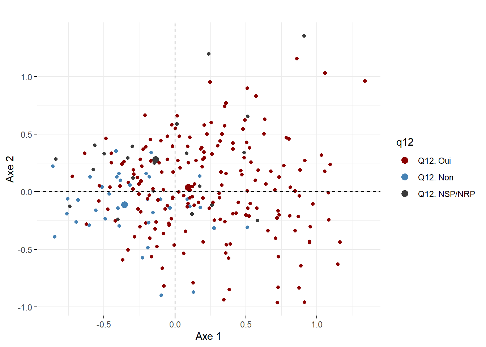
12.4.2 Mise en œuvre dans R
12.4.2.1 Calcul d’une ACM avec FactoMineR
Plusieurs packages permettent de calculer une ACM dans R, notamment ExPosition (fonction epMCA), ade4 (fonction dudi.mca) et FactoMineR (fonction MCA). De nouveau, nous utilisons FactoMineR couplé au package factoextra pour réaliser rapidement des graphiques.
Pour calculer l’ACM, il suffit d’utiliser la fonction MCA de FactoMineR, puis la fonction summary(res.acm) qui renvoie les résultats de l’ACM pour :
Les valeurs propres (section
Eigenvalues) pour les axes factoriels (Dim.1àDim.n) avec leur variance expliquée brute (Variance), en pourcentage (% of var.) et en pourcentage cumulé (Cumulative % of var.).Les dix premières observations (section
Individuals) avec les coordonnées factorielles (Dim.1àDim.n), les contributions (ctr) et les cosinus carrés (cos2). Pour accéder aux résultats pour toutes les observations, utilisez les fonctionsres.acm$indou encoreres.acm$ind$coord(uniquement les coordonnées factorielles),res.acm$ind$contrib(uniquement les contributions) etres.acm$ind$cos2(uniquement les cosinus carrés).Les dix premières modalités des variables (section
Categories) avec les coordonnées factorielles (Dim.1àDim.n), les contributions (ctr) et les cosinus carrés (cos2).
La syntaxe ci-dessous permet, dans un premier temps, de calculer l’ACM, puis de créer un DataFrame pour les résultats des valeurs propres.
library(FactoMineR)
# Calcul de l'AFC
res.acm <- MCA(dfACM, # Nom du DataFrame
ncp = 3, # Nombre d'axes retenus
quali.sup=10:13, # Variables supplémentaires
graph = FALSE,
row.w = dfenquete$pond) # Variables pour la pondération des lignes
# Affichage des résultats
print(res.acm)**Results of the Multiple Correspondence Analysis (MCA)**
The analysis was performed on 352 individuals, described by 13 variables
*The results are available in the following objects:
name description
1 "$eig" "eigenvalues"
2 "$var" "results for the variables"
3 "$var$coord" "coord. of the categories"
4 "$var$cos2" "cos2 for the categories"
5 "$var$contrib" "contributions of the categories"
6 "$var$v.test" "v-test for the categories"
7 "$var$eta2" "coord. of variables"
8 "$ind" "results for the individuals"
9 "$ind$coord" "coord. for the individuals"
10 "$ind$cos2" "cos2 for the individuals"
11 "$ind$contrib" "contributions of the individuals"
12 "$quali.sup" "results for the supplementary categorical variables"
13 "$quali.sup$coord" "coord. for the supplementary categories"
14 "$quali.sup$cos2" "cos2 for the supplementary categories"
15 "$quali.sup$v.test" "v-test for the supplementary categories"
16 "$call" "intermediate results"
17 "$call$marge.col" "weights of columns"
18 "$call$marge.li" "weights of rows" summary(res.acm)
Call:
MCA(X = dfACM, ncp = 3, quali.sup = 10:13, graph = FALSE, row.w = dfenquete$pond)
Eigenvalues
Dim.1 Dim.2 Dim.3 Dim.4 Dim.5 Dim.6 Dim.7
Variance 0.248 0.156 0.135 0.127 0.126 0.123 0.114
% of var. 13.940 8.792 7.620 7.161 7.065 6.916 6.385
Cumulative % of var. 13.940 22.732 30.352 37.513 44.579 51.494 57.879
Dim.8 Dim.9 Dim.10 Dim.11 Dim.12 Dim.13 Dim.14
Variance 0.107 0.101 0.095 0.093 0.086 0.077 0.071
% of var. 6.003 5.671 5.327 5.234 4.822 4.340 4.011
Cumulative % of var. 63.882 69.553 74.880 80.115 84.937 89.277 93.288
Dim.15 Dim.16
Variance 0.064 0.055
% of var. 3.619 3.094
Cumulative % of var. 96.906 100.000
Individuals (the 10 first)
Dim.1 ctr cos2 Dim.2 ctr cos2
4 | 0.261 0.063 0.052 | 0.327 0.155 0.081 |
10 | -0.533 0.688 0.278 | 0.050 0.010 0.002 |
11 | 0.135 0.020 0.014 | -0.120 0.025 0.011 |
15 | 0.020 0.000 0.000 | 0.271 0.073 0.061 |
17 | -0.133 0.014 0.012 | -0.264 0.088 0.049 |
18 | 0.196 0.024 0.018 | 0.279 0.078 0.037 |
19 | -0.193 0.041 0.014 | -0.063 0.007 0.002 |
21 | 0.845 0.731 0.369 | -0.337 0.184 0.059 |
23 | -0.253 0.155 0.058 | -0.020 0.002 0.000 |
26 | 0.802 0.552 0.170 | 0.460 0.288 0.056 |
Dim.3 ctr cos2
4 0.251 0.105 0.048 |
10 -0.413 0.757 0.167 |
11 -0.354 0.252 0.097 |
15 -0.503 0.291 0.209 |
17 0.835 1.019 0.486 |
18 0.104 0.012 0.005 |
19 0.159 0.051 0.010 |
21 -0.390 0.285 0.079 |
23 -0.375 0.624 0.128 |
26 0.098 0.015 0.003 |
Categories (the 10 first)
Dim.1 ctr cos2 v.test Dim.2 ctr
Q3. Moins de 1 an | -0.731 2.704 0.068 -4.940 | 0.677 3.681
Q3. De 1 à 4 ans | -0.286 1.259 0.043 -3.921 | -0.791 15.299
Q3. De 5 à 9 ans | 0.119 0.122 0.003 1.102 | 0.385 2.023
Q3. 10 ans ou plus | 0.450 3.189 0.110 6.271 | 0.347 3.006
Q4. Moins de 10% | -0.562 7.874 0.395 -11.913 | 0.033 0.044
Q4. 10 à 25% | 0.745 4.918 0.137 7.006 | -0.765 8.220
Q4. 26 à 50% | 0.775 3.815 0.099 5.966 | 0.644 4.176
Q4. Plus de 50% | 0.527 1.310 0.033 3.424 | 0.395 1.167
Q5. Oui | 0.950 9.194 0.265 9.760 | 0.557 5.008
Q5. Non | -0.279 2.701 0.265 -9.760 | -0.164 1.471
cos2 v.test Dim.3 ctr cos2 v.test
Q3. Moins de 1 an 0.058 4.578 | 0.627 3.636 0.050 4.236 |
Q3. De 1 à 4 ans 0.328 -10.855 | 0.390 4.304 0.080 5.360 |
Q3. De 5 à 9 ans 0.035 3.556 | -1.110 19.427 0.293 -10.261 |
Q3. 10 ans ou plus 0.065 4.835 | 0.023 0.016 0.000 0.327 |
Q4. Moins de 10% 0.001 0.704 | 0.070 0.221 0.006 1.477 |
Q4. 10 à 25% 0.144 -7.194 | -0.109 0.191 0.003 -1.021 |
Q4. 26 à 50% 0.068 4.957 | 0.154 0.276 0.004 1.187 |
Q4. Plus de 50% 0.018 2.566 | -0.372 1.195 0.016 -2.417 |
Q5. Oui 0.091 5.720 | -0.126 0.294 0.005 -1.290 |
Q5. Non 0.091 -5.720 | 0.037 0.086 0.005 1.290 |
Categorical variables (eta2)
Dim.1 Dim.2 Dim.3
q3 | 0.162 0.338 0.334 |
q4 | 0.400 0.191 0.023 |
q5 | 0.265 0.091 0.005 |
q8 | 0.071 0.032 0.352 |
q9 | 0.548 0.340 0.338 |
q10 | 0.381 0.015 0.004 |
q11 | 0.245 0.235 0.034 |
q12 | 0.121 0.038 0.007 |
q13 | 0.036 0.126 0.122 |
Supplementary categories (the 10 first)
Dim.1 cos2 v.test Dim.2 cos2 v.test
Q15. 18 à 34 ans | -0.091 0.004 -1.221 | -0.271 0.037 -3.630 |
Q15. 35 à 49 ans | -0.060 0.001 -0.731 | -0.014 0.000 -0.175 |
Q15. 50 à 64 ans | 0.140 0.006 1.419 | 0.251 0.018 2.543 |
Q15. 65 ans et plus | 0.107 0.002 0.874 | 0.248 0.011 2.020 |
Q16. Travail temps plein | -0.096 0.012 -2.084 | -0.065 0.005 -1.404 |
Q16. Travail. temps partiel | 0.364 0.010 1.875 | -0.147 0.002 -0.757 |
Q16. Étudiant | -0.139 0.002 -0.774 | -0.111 0.001 -0.617 |
Q16. Retraité | 0.166 0.006 1.521 | 0.254 0.015 2.331 |
Q16. Sans emploi | 0.440 0.006 1.433 | -0.142 0.001 -0.464 |
Q16. À la maison | -0.056 0.000 -0.279 | 0.175 0.002 0.878 |
Dim.3 cos2 v.test
Q15. 18 à 34 ans 0.092 0.004 1.232 |
Q15. 35 à 49 ans -0.112 0.005 -1.360 |
Q15. 50 à 64 ans -0.002 0.000 -0.020 |
Q15. 65 ans et plus 0.015 0.000 0.122 |
Q16. Travail temps plein -0.025 0.001 -0.540 |
Q16. Travail. temps partiel 0.291 0.006 1.497 |
Q16. Étudiant -0.088 0.001 -0.488 |
Q16. Retraité 0.031 0.000 0.284 |
Q16. Sans emploi -0.495 0.007 -1.611 |
Q16. À la maison 0.144 0.001 0.720 |
Supplementary categorical variables (eta2)
Dim.1 Dim.2 Dim.3
q15 | 0.010 0.048 0.007 |
q16 | 0.027 0.020 0.015 |
q17 | 0.006 0.014 0.014 |
q21 | 0.002 0.001 0.007 |12.4.2.2 Exploration graphique des résultats de l’ACM pour les valeurs propres
Pour créer un histogramme des valeurs propres de l’ACM, vous pouvez utiliser la fonction fviz_screeplot de factoextra.
library(factoextra)
library(ggplot2)
fviz_screeplot(res.acm, addlabels = TRUE,
x = "Composantes", y = "Valeur propre", title = "")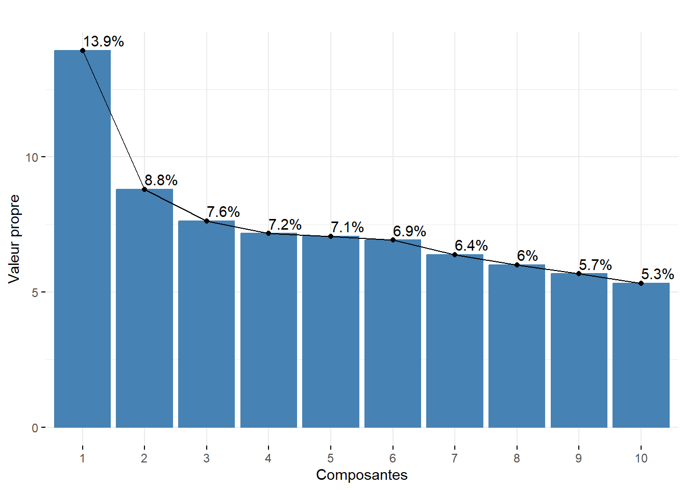
Avec un peu plus de lignes de code, il est relativement facile d’exploiter le DataFrame des valeurs propres créé précédemment (dfACMvp) pour construire des graphiques plus personnalisés.
library(factoextra)
library(ggplot2)
couleursAxes <- c("steelblue" , "skyblue2")
g1 <- ggplot(dfACMvp, aes(x = VP, y = Axe))+
geom_bar(stat = "identity", width = .6, alpha = .8, color = "black", fill = "skyblue2")+
labs(x = "Valeur propre", y = "Axe factoriel")
g2 <- ggplot(dfACMvp, aes(x = VP_pct, y = Axe))+
geom_bar(stat = "identity", width = .6, alpha = .8, color = "black", fill = "skyblue2")+
theme(legend.position = "none")+
labs(x = "Variance expliquée (%)", y = "Axe factoriel")
g3 <- ggplot(dfACMvp, aes(x = VP_pctCumul, y = Axe, group=1))+
geom_bar(stat = "identity", width = .6, alpha = .8, color = "black", fill = "skyblue2")+
geom_line(colour = "brown", linetype = "solid", size=.8) +
geom_point(size=3, shape=21, color = "brown", fill = "brown")+
theme(legend.position = "none")+
labs(x = "Variance expliquée (% cumulé)", y = "Axe factoriel")
ggarrange(g2, g3, nrow = 2)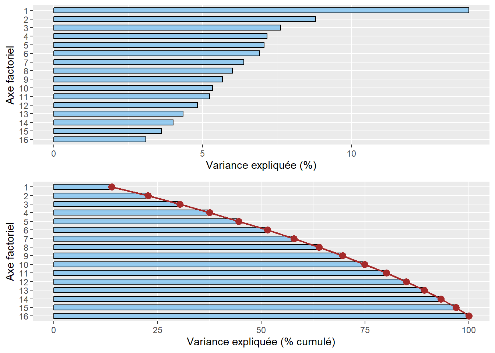
La syntaxe ci-dessous permet de construire un tableau avec les coordonnées factorielles, les cosinus carrés et les contributions pour les modalités des variables qualitatives.
library(stringr)
nAxes <- 3
dfmodalites <- data.frame(Modalite =rownames(res.acm$var$coord),
Coord = round(res.acm$var$coord[, 1:nAxes],3),
Cos2 = round(res.acm$var$cos2[, 1:nAxes],3),
ctr = round(res.acm$var$contrib[, 1:nAxes],3))
rownames(dfmodalites) <- 1:nrow(dfmodalites)
names(dfmodalites) <- str_replace(names(dfmodalites), ".Dim.", "F")12.4.2.3 Exploration graphique des résultats de l’ACM pour les modalités
Avant d’explorer graphiquement les résultats pour les modalités, il est judicieux de construire un DataFrame avec les coordonnées factorielles, les contributions et les cosinus carrés des modalités (voir la syntaxe ci-dessous).
library(kableExtra)
library(stringr)
nAxes <- 3
dfmodalites <- data.frame(Modalite =rownames(res.acm$var$coord),
Coord = round(res.acm$var$coord[, 1:nAxes],2),
ctr = round(res.acm$var$contrib[, 1:nAxes],2),
Cos2 = round(res.acm$var$cos2[, 1:nAxes],2))
rownames(dfmodalites) <- 1:nrow(dfmodalites)
names(dfmodalites) <- str_replace(names(dfmodalites), ".Dim.", "F")Plusieurs fonctions très faciles à utiliser de factoextra permettent de construire rapidement des graphiques : fviz_mca_var pour un nuage de points d’un plan factoriel, fviz_cos2 et fviz_contrib (en utilisant le paramètre choice=var.cat) pour des histogrammes avec les cosinus carrés et les contributions des modalités.
Il est aussi possible de créer vos propres graphiques avec ggplot2 en utilisant le DataFrame créé précédemment avec les modalités. Par exemple, la syntaxe ci-dessous renvoie deux histogrammes pour l’axe 1 : l’un avec les coordonnées, l’autre avec les contributions. Dans la syntaxe, repérez le terme CoordF1. Dupliquez la syntaxe et changez ce terme pour CoordF2 et CoordF3 pour réaliser les graphiques des axes 2 et 3.
# Histogrammes pour les coordonnées des modalités
couleursCoords <- c("lightsalmon" , "steelblue")
plotCoordF1 <- ggplot(dfmodalites,
aes(y = reorder(Modalite, CoordF1),
x = CoordF1, fill = CoordF1<0))+
geom_bar(stat = "identity", width = .6, alpha = .8, color = "black")+
geom_vline(xintercept = 0, color = "black", linewidth = 1)+
scale_fill_manual(name = "Coordonnée" , values = couleursCoords,
labels = c("Positive" , "Négative"))+
labs(x = "Coordonnées sur l'axe 1", y = "Modalité")+
theme(legend.position = "none", axis.text.y = element_text(size = 7))
plotCtrF1 <- ggplot(dfmodalites, aes(y = reorder(Modalite, ctrF1), x = ctrF1))+
geom_bar(stat = "identity", width = .6, alpha = .8, color = "black", fill = "steelblue")+
labs(x = "Contributions sur l'axe 1", y = "Modalité")+
theme(legend.position = "none", axis.text.y = element_text(size = 7))
ggarrange(plotCoordF1, plotCtrF1, ncol = 1, nrow = 2)La syntaxe suivante permet de construire le premier plan factoriel pour les modalités avec la fonction fviz_mca_var de factoextra (figure fig-ACMMiseEnOeuvreVars2).
res.acm2 <- MCA(dfACM[1:9], ncp = 3, graph = FALSE, row.w = dfenquete$pond)
fviz_mca_var(res.acm2, repel = TRUE,
choice = "var.cat",
axes = c(1, 2),
# col.var = "black",
title = "", xlab = "Axe 1", ylab = "Axe 2",
ggtheme = theme_minimal ())
La syntaxe suivante permet de construire le premier plan factoriel pour les modalités supplémentaires avec la fonction fviz_mca_var de factoextra (figure fig-ACMMiseEnOeuvreVars3).
fviz_mca_var(res.acm, repel = TRUE,
choice = "var.cat",
axes = c(1, 2),
col.var = "gray23",
col.quali.sup = "darkred",
labelsize = 3,
title = "", xlab = "Axe 1", ylab = "Axe 2",
ggtheme = theme_minimal ())Finalement, la syntaxe ci-dessous renvoie un graphique avec la trajectoire de la variable Q3 (figure fig-ACMMiseEnOeuvreVars4).
library(ggpubr)
Q3 <- dfmodalites[1:4, 1:3]
ggplot(Q3, aes(x = CoordF1, y = CoordF2, label=Modalite))+
xlim(-1, .75)+ylim(-1, 1)+
labs(title = "Q3. Depuis combien de temps cultivez-vous \n
des fruits, des fines herbes ou des légumes?",
x = "Axe 1", y = "Axe 2")+
geom_label(nudge_x=0, nudge_y = 0.07) +
geom_line( color = "black", linewidth = .2)+
geom_point(shape=21, color = "black", fill = "steelblue", size=4)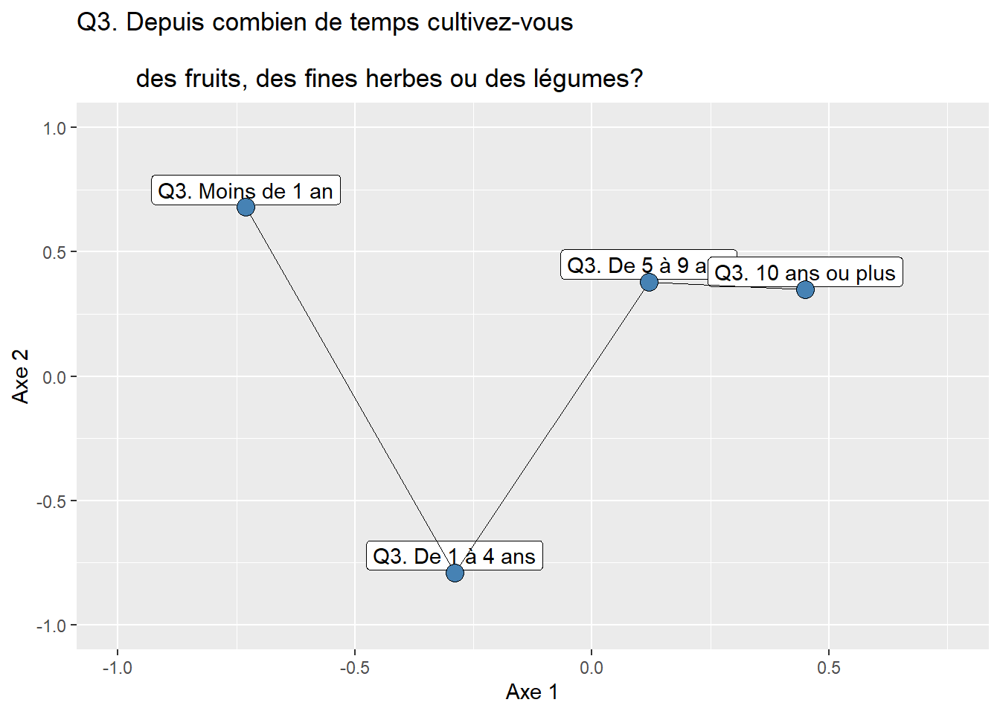
12.4.2.4 Exploration graphique des résultats de l’ACM pour les individus
D’autres fonctions de factoextra produisent rapidement des graphiques pour les individus :
-
fviz_cos2etfviz_contrib(en utilisant le paramètrechoice=ind) pour construire des histogrammes pour les cosinus carrés et les contributions des individus. -
fviz_mca_indpour un nuage de points d’un plan factoriel (axes 1 et 2 habituellement).
La syntaxe ci-dessous produit le premier axe factoriel pour les individus (figure fig-ACMPlanFactoInd1Facto).
fviz_mca_ind(res.acm, col.ind = "cos2",
gradient.cols = c("#00AFBB", "#E7B800", "#FC4E07"),
repel = TRUE,
xlab = "Axe 1", ylab = "Axe 2", title = "",
ggtheme = theme_minimal())La syntaxe ci-dessous produit aussi le premier plan factoriel pour les individus, mais en attribuant une couleur différente aux modalités de la variable q12 (figure fig-ACMPlanFactoInd2Facto).
fviz_mca_ind (res.acm,
label = "none",
habillage = "q12", # colorer par groupes
xlab = "Axe 1", ylab = "Axe 2", title = "",
palette = c ("darkred", "steelblue", "gray23"),
ggtheme = theme_minimal ())
12.5 Quiz de révision du chapitre
Des variables latentes ne sont pas directement observées, mais plutôt produites par la méthode factorielle afin de résumer les relations/associations entre plusieurs variables mesurées initialement.
Relisez au besoin l’introduction du chapitre sec-chap12.
Quelles sont les métriques utilisées pour les trois principales méthodes factorielles?
Relisez au besoin la section sec-1211.
En ACP normée, la somme des valeurs propres (inertie totale) est égale au :
Relisez au besoin le début de la section sec-12221.
En ACP normée, la coordonnée factorielle d’une variable sur un axe est :
Relisez au besoin la section sec-12222.
Quelles affirmations sont exactes pour toutes les méthodes factorielles?
Relisez au besoin chacune des sections intitulées aides à l’interprétation pour les trois méthodes factorielles.
L’analyse des correspondances multiples (ACM) est simplement une analyse des correspondances (AFC) sur un tableau disjonctif complet?
Relisez au besoin la section sec-124.
Dans une ACM, les variables du tableau disjonctif complet sont :
Relisez au besoin la section sec-124.
Quelles sont les étapes essentielles pour bien interpréter une analyse factorielle (ACP, AFC ou ACM)?
Relisez le deuxième encadré à la section sec-1221.
Audate, Pierre Paul, Geneviève Cloutier et Alexandre Lebel. 2021. « The motivations of urban agriculture practitioners in deprived neighborhoods: A comparative study of Montreal and Quito. » Urban Forestry & Urban Greening 62: 127171. https://doi.org/10.1016/j.ufug.2021.127171.
Bendixen, Mike T. 1995. « Compositional perceptual mapping using chi-squared trees analysis and correspondence analysis. » Journal of Marketing Management 11 (6): 571‑581. https://doi.org/10.1080/0267257X.1995.9964368.
Benzécri, Jean-Paul. 1973. L’analyse des données. Tome 1. La taxinomie. Tome 2. L’analyse des correspondances. Vol. 2. Dunod.
Bhatt, Vikram et Leila Marie Farah. 2016. « Cultivating Montreal: A Brief History of Citizens and Institutions Integrating Urban Agriculture in the City. » Urban Agriculture & Regional Food Systems 1 (1): 1‑12. http://dx.doi.org/10.2134/urbanag2015.01.1511.
Escofier, Brigitte. 1979. « Traitement simultané de variables qualitatives et quantitatives en analyse factorielle. » Cahiers de l’Analyse des Données 4 (2): 137‑146.
Escofier, Brigitte et Jérôme Pagès. 1998. « Analyses factorielles simples et multiples. » Dunod, Paris.
Gelb, Jérémy et Philippe Apparicio. 2021. « Apport de la classification floue c-means spatiale en géographie: essai de taxinomie socio-résidentielle et environnementale à Lyon. » Cybergeo: European Journal of Geography. https://doi.org/10.4000/cybergeo.36414.
Hotelling, Harold. 1933. « Analysis of a complex of statistical variables into principal components. » Journal of educational psychology 24 (6): 417. https://psycnet.apa.org/doi/10.1037/h0071325.
Hubert, Mia, Peter J Rousseeuw et Karlien Vanden Branden. 2005. « ROBPCA: a new approach to robust principal component analysis. » Technometrics 47 (1): 64‑79. https://doi.org/10.1198/004017004000000563.
Kaiser, Henry F. 1960. « The application of electronic computers to factor analysis. » Educational and psychological measurement 20 (1): 141‑151. https://doi.org/10.1177%2F001316446002000116.
Lê, Sébastien, Julie Josse et François Husson. 2008. « FactoMineR: A Package for Multivariate Analysis. » Journal of Statistical Software 25 (1): 1‑18. 10.18637/jss.v025.i01.
Lebart, Ludovic, Alain Morineau et Marie Piron. 1995. Statistique exploratoire multidimensionnelle. Dunod.
McClintock, Nathan. 2018. « Urban agriculture, racial capitalism, and resistance in the settler-colonial city. » Geography Compass 12 (6): 1‑16. https://doi.org/10.1111/gec3.12373.
Pagès, Jérôme. 2002. « Analyse factorielle multiple appliquée aux variables qualitatives et aux données mixtes. » Revue de statistique appliquée 50 (4): 5‑37.
———. 2013. Analyse factorielle multiple avec R. EDP sciences.
Rivest, Louis-Paul et Nathalie Plante. 1988. « L’analyse en composantes principales robuste. » Revue de statistique appliquée 36 (1): 55‑66. http://www.numdam.org/article/RSA_1988__36_1_55_0.pdf.
Sanders, Lena. 1989. L’analyse statistique des données en géographie. GIP Reclus.